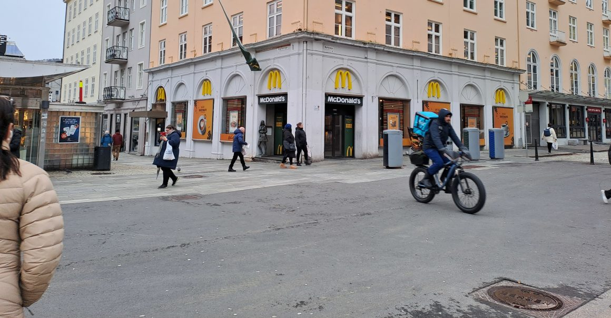
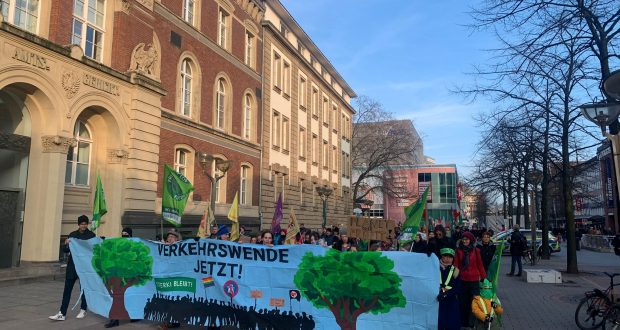
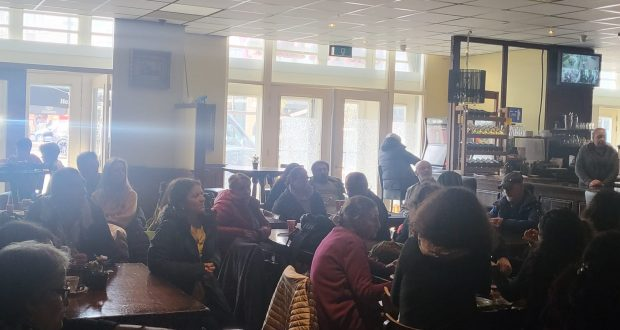
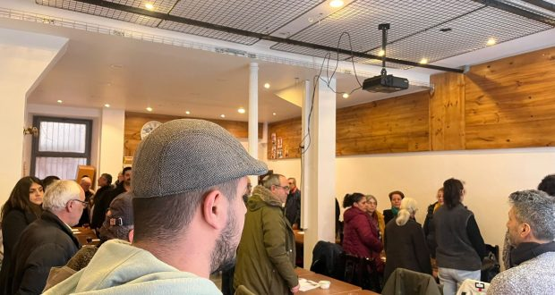
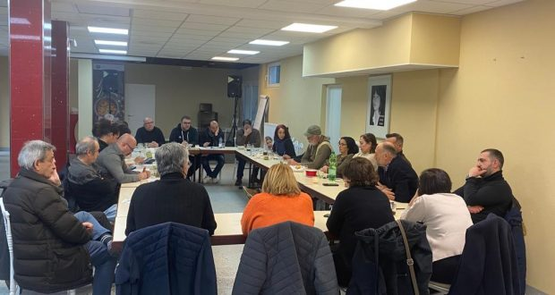

{kind=link}
{kind=link}
 照片：程序披露
照片：程序披露
[This lan. PDF][This lan. ODT][This lan. MD][This lan. TXT][This lan. TXT LIST]
Please select your language 请选择你的语言:
作者: Rosa Minine
描述: 05年3月3日，星期日，上午6点，重播18小时，杰拉尔多·诺特（Geraldo do Norte），诗人马托托（Matuto
发布时间: 2023-03-05T00:05:00-03:00
修改时间: None
更新的时间: None
图片: ['GeraldoDoNorte.jpeg', 'printfriendly-pdf-email-button-md.png']
部分: Agenda Cultural
标签: ['Agenda Cultural', 'Geraldo do Norte', 'No Tabuleiro do Brasil', 'Poeta Matuto', 'programa']
类型: article
照片：程序披露
05年3月3日，上午6点，重播18H， Geraldo do Norte ， Poetamatuto ，在版本中接受采访56从巴西董事会上的礼物，这是其传统的巴西音乐和流行文化节目。 传输是通过 Radio Live O Samba **。
地址：https://www.radiovaosamba.com.br/
News Source: https://anovademocracia.com.br/programa-no-tabuleiro-do-brasil-com-geraldo-do-norte-2/
作者: Tjen Folket Media
描述: BA在卑尔根的麦当劳餐馆撰写了持续的恶劣状况。 在De＆nbsp;首次披露后的两年后，再次发现员工被迫生病，没有休息。
发布时间: 2023-03-05T15:45:05+00:00
修改时间: 2023-03-05T23:17:39+00:00
图片: ['20230223_152237-1-1160x604.jpg', 'YeEipodBCb-zl_CDXNN5UQWrvaUrOrxgewUyEhzlR3aRdy3KXgoOKQAT5wG9B5Ll2rdcthJPJoUZpedgSgDNk_8muRO8PKT1XAPu7BX5qBCnS9BAUu07gWFFLDXzgKZf4zg6Vtk2Y1y7DOLk7z1kM8I']
标签: None
类别: 'Innenriks'

*由Eart Folket Media的评论员。
BA在卑尔根的麦当劳餐馆撰写了持续的恶劣状况。 在第一次启示录后的两年，再次发现员工被迫生病，没有休息。
BA写道，他们已经与8名现任和前任雇员进行了交谈，他们描述了高工作压力的船长警卫。 尽管生病，但被要求在工作中工作的人。 该管理层花费了很长时间的响应，或者不响应员工的消息和请求。 以及不适合员工需求的可吸收手表列表。
麦当劳挪威的领导层拒绝了批评，并说他们“有很好的同事，他们在一起工作良好，壮成长”。 并指他们最大的工作调查结果。
在餐厅的高峰时间之后，员工说他们仍然会迫使风格工作而没有休息以清洗和清洁。
这不是第一次在卑尔根的麦当劳餐厅发现不良情况。 在2021年，据透露，工人长时间休息，食物和饮料，导致工作人员晕倒和伤害自己。对于在卑尔根泻湖的这家餐厅的结果，奥斯陆总部的总奖金是大奖金。 在BA中的披露之后，如果设定了Atnye领导者，可以阅读，并且新协议应该解决这一问题。
麦当劳还在卑尔根和奥斯陆开设了广告，上面写着：“搜索10个工作中的7名中没有10个。”
在这些启示的背景下，以及该行业如何利用工人，尤其是年轻人和不良工作条件，这表明发生了什么不仅仅是偏差。 但是，该行业的文化领导者的一部分对于如何治疗工人来说是有什么。
参考
News Source: https://tjen-folket.no/index.php/2023/03/05/bergen-fortsatt-darlige-forhold-pa-mcdonalds/
作者: Movimento Feminino Popular
时间: 2023-03-05T19:46:00-03:00
图片: ['5jTH_CL6ouGGnHNZ9SVvohUjSCdTBU3KkmZ05eNyA72Lzkbn9lCbBlfylhi13_x09iwkP4iDizYBg6c=s320', 'qFSZKtew4592G_GnatuWoBv3-f26MpuBPOgQcfxhOvKpikqe73rwCDm7DEv_4pUa5KM7jOvwyqsPXLs=s320']
标签: []
秘鲁共产党的全球和最大的女主人公
作为我们庆祝国际妇女节的一部分，我们使我们的庄严荣誉荣耀诺拉(Norah)的英勇记忆，我们承担了未来参考书目出版的必要任务，这是对这种共产党领袖的必要任务，从这个意义上讲，我们已经在这个意义上分享了一些摘录他的生活和革命武装。
_ 同志诺拉 _
世界无产阶级革命的红旗
秘鲁共产党的最大女主角
“ honra和荣耀诺拉(Norah)!
_第一国会对诺拉(Norah)的成员诺拉(Norah和革命。总是一致的反暴露主义者。 聚会中最大的女主人公。
_国会颁发镰刀和锤子的命令，是最高的政党； 决定：在未来的纪念碑的纪念碑中，阿西通人的英雄是一个特殊的地方和最大偏好的纪念碑。 “ _
PCP国会大会的特别决议 - 秘鲁共产党，
1989年6月29日。1992年9月，冈萨洛总统与PCP的大多数方向和不可通信的职位一起被捕，在Conceteteubterranean的一个孤立牢房中，位于Callao的海军基地，Lima的大都会地区，是29岁的29年 - 年 - 年 - YER -OLD的首府甚至正确的访问和阅读，没有进行，直到2021年9月11日怯ward谋杀。
被捕后，1992年9月9日，当时的法西斯阿尔贝托·富吉莫里(Alberto Fujimori)下令谋杀冈萨罗总统，但是，在美国公司的指挥下，军方做出了另一个决定，以停止“对冈萨洛对阵冈萨洛”，“创建So称为“ vladivideos”的顾客，为“ _ _ Wills of Peace”，通过一份假定的和平协议的作者，以“源自战争_造成的问题”的理由，传递了一份自由的和平协议的作者的版本。 ”。 这场公开和鼓掌的骗局是对流行战争的连续性的骗局，由修正主义叛徒组成，该叛徒构建了右翼的监狱，并组成了右翼线，然后是党中央委员会的成员，他们倾向于与之合作，以便与之合作革命的敌人的自命不凡的计划。 但是，即使面对政变，PCP也采取了新的复杂局势，继续采取了勇敢的行动，并捍卫了冈萨洛总统和思想贡扎洛的生活。 这场斗争使对政党和革命的政党的价值，意义和需求。 29年的通电行为，意识形态的坚定和共产主义对冈萨法尔教师的信念，埋葬在反应的地牢中，他的酷刑，最后是他的谋杀案，是他无私的证据，证明了他为党派和革命献出生命的无私榜样。这是秘鲁-PCP共产党的第一和历史大会，在庄严的评估中，当时已故的诺拉同志是中央委员会的历史成员(PCP的最大中心方向器官)，该计划是一种特殊的决议，强调了最高的政党区别，镰刀和锤子的命令，承认该政党是该党最伟大的女主人公。
奉献给党，共产主义的革命和事业的生活
伟大的共产党领袖，诺拉同志，正如众所周知的奥古斯塔·迪亚尼拉·托雷·卡拉斯科(Augusta Deyanira La Torre Carrasco)所著，1946年8月29日出生于秘鲁阿亚库乔(Ayacucho)的Huanta市。 奥古斯塔·拉托雷(Augusta La Torre)是兄弟四分之一的第三个：卡洛斯(Carlos)，鲍里斯(Boris)和吉赛拉(Gisela)。 她的朋友称她为“ Augusta”或葡萄牙语“ Augustinha”。
奥古斯塔·德拉·托雷(Augusta de la Torre)出生于一个革命民主党家庭。 Carlos Rolando La TorreCódova的时代，共产党成员和初等教育老师DelicarrascoGaldós。 他们住在位于卡奇河附近的位置的“ iribamba”中，在革命文化，政治活动和抗议对古老的秘鲁国家的环境中，对他们来说很普遍。
正是在父母的家中，他遇到了博士。 阿比马尔·古兹曼(AbimaelGuzmán)，当时，圣克里斯托夫斯托夫大学(University of S之间)哲学教授。 古兹曼经常在阿亚库乔(Ayacucho)受到监管，与父亲会面以对待政治。
1962年，奥古斯塔·拉托雷(Augusta La Torre)和他的父母一起搬到了瓦曼加(Huamanga)，研究了正常的阿亚库乔妇女学校(Ayacucho Womens School)，这是一个严格的内部规定的教学中心。 他加入了这个中心，这要归功于他获得的优秀水平，在选拔考试中获得第四位，否则他可以在那里学习，因为只有家人家族的年轻人才能进入，父母无法为学习付费。奥古斯塔·拉托雷(Augusta La Torre)在苛刻的正常学校中获得了高平均水平。
她与她在师范大学的宿舍分享的朋友回想起她的性格，同情，对波普斯和聪明的痛苦，除了她的内向和保留的特征外。 由于已经担心美丽和时尚，但是对于奥古斯塔·拉托雷(Augusta La Torre)来说，相反，它并不介意她的美丽。奥古斯塔·德拉·托雷(Augusta de la Torre)于1963年17岁，是共产党多佩鲁(Communist Party Party Dorperu)的一部分，他的红色分数由AbimaelGuzmán博士领导，AbimaelGuzmán博士是PCP-FLAG，在国防控制中控制了修正主义者Kruschovista de del Prado。马克思主义 - 列宁主义，想到毛Tsetung。 阿比马尔·古兹曼(AbimaelGuzmán)在几个周末进行了激烈的辩论，在奥古斯塔(Augusta)被证明是浮躁的政治对手。
这时他离开了大学的承诺，并开始致力于政治激进。 他在体积统一中提高了作品，并搬到了各个田野区域，主导了一种农民说的土著语言Quechua，这有利于他与他们直接接触。 他指导了研究和调查淘汰赛状况，包括无可争议的尊重和政治权威等等(共产党成员). Além disso, defendeu e apoiou areorganização da Frente Estudantil Revolucionária (fer)并在乡村，矿山，市场，专业工人和其他工人中培养了其他女性。 1965年，他在Ayacucho创立了女性运动，完成了配方和领导者的任务。
1964年2月3日，奥古斯塔·拉托雷(Augusta La Torre)和阿比马尔·古兹曼(AbimaelGuzmán)结婚，曾经曾经致力于致力于无产阶级事业。 简单，没有许多装饰品在父母的家中，综合人物，这些照片被证明是一个极大的喜悦的时刻。
1965年，当时被称为贝特的奥古斯塔(Augusta(AbimaelGuzmán). Em janeiro de1966, viajou à China, e participou nos estudos da Escola Político-militar deformação de quadros de Shangai, do Partido Comunista da China - PCCh, na seçãopara comunistas latino-americanos. Com um veterano da Longa Marcha aprendeutáticas de assaltos, movimento de colunas guerrilheiras e etc. Assim queretornou à China, escreveu múltiplos artigos para o órgão de imprensa do PCP,denominado Bandeira Vermelha, em suas edições 1,2,3,4,e 5 de Ayacucho,revelando sua capacidade política e analítica.
1969年，奥古斯塔(Augusta)开发了笨拙的作品。 今年6月，Velascoalvarado将军政府颁布了第006号法令，攻击了培训教育的好处。 这引起了抗议活动的重要运动，抗议活动是通过捍卫Ayacucho人民而授予的，后者已经出现了几年，正是在发展意图进行预算削减之前捍卫了这所大学。 由PCP和冈萨洛总统执导的Denunsino酬金的斗争在Dehuanta实现了极大的超越，并将其纳入其中。 军政府针对农民，老师和学生的阿维奥伦塔(Aviolenta)镇压不利，监狱是冈萨洛总统本人的监狱，但无法击败这一运动，最后撤回了政府令。
1970年，破裂发生在秘鲁的共产党内部和红色的一部分，PCP-危险信号开始了秘鲁共产党的重建过程。
从1972年到1975年，奥古斯塔(Augusta)在农民的运动，工人和阶级工人的运动以及通过FER的研究中发展了她的活动。 从1974年到1975年，他提高了PCPE的重建，在国家一级建立了受欢迎的女性运动。
奥古斯塔·德拉·托雷(Augusta de la Torre)于1978年与总统一起进入秘密。1980年的大众战争开始了，诺拉(Norah)同志是阿亚库乔(Ayacucho)的第一批武装行动，位于佩鲁维亚斯南部，附近和地区。 在冈萨洛总统的指导下，据说她自己声称“向冈萨洛总统学习”和“士兵多尔·多尔·冈萨洛”，诺拉同志被伪造成PCP和中心方向的伟大领导人，作为中央的成员委员会和委员会在冈萨洛总统无争议的领导下积极参加了第一党派委员会的组织。
诺拉(Norah)同志于1988年11月14日在1988年至1989年举行的第一届PCP大会上去世。诺拉(Norah)同志因健康问题恶化而丧生。 她宁愿牺牲自己的生命，而不是危害该党的其他同志，因此拒绝出国。 秘密条件在安全室获得了PCP的葬礼荣誉。 为了他的荣誉，冈萨洛总统下令26个玫瑰红人象征着他26年的共产主义武装。 它是被埋葬的客户，从反应鬣狗的vilipendio保存到一天中的一天，维持那些在血统下的秘密从未加入珍贵的宝藏。
1989年的第三届DEJUNH举行的第三届PCP大会批准了一项特殊决议，在该决议中，他将秘鲁-PCP共产党的最高隔间和认可为Praresanorah。 认可该党最大的女主角被授予Dafoice和The Hammer的命令：
“ _ firm马克思列宁主义者，冈萨洛和反修正主义思想，红色部分的创始人和伟大的历史领导者：献出生命和革命的例子；人的女儿，和intern _ _ _ _ _ _ _ _ _ _ _ _ _ _ _ mante旗帜挑战反对无产阶级的风。AmaiorHero__í___派对和革命! _”
荣誉和荣耀永恒的诺拉(Norah)!
在这里下载](https://drive.google.com/file/d/1u_OZa_zOVCt6sMxkzk1-HBEm9ORUPjub/view?usp=share_link)同志横幅norah
News Source: https://brasilmfp.blogspot.com/2023/03/camarada-norah-flamejante-bandeira.html
作者: Philippine Revolution Web Central
发布时间: 2023-03-05T98:00:00-04:00
修改时间: 2023-03-06T06:46:06+00:00
描述: 3月2日，军事网站Max Defense于2022年以100 Hermes 90 UAV到达菲律宾，这是一类无人驾驶飞机或Elbit Syste制造的无人机或无人机
图片: ['hermes-90-768x1024.jpg']
类别: ['Human Rights', 'Politics']
类型: article
 3月2日，军事网站Max Defence于2022年以100 Hermes 90 UAV到达菲律宾，这是一类由以色列的Elbit Systems制造的无人管的车辆或无人机。 这些无人机是菲律宾武装力量的一部分，用于533个这样的无人机系统。 每个系统都有两个无人机，或总计1,066个空调。 全合同费用为1.53亿美元(₱7.650 Trilyon Safalit $ 1 =₱50)或每人765万。 该合同成立于2019年。
3月2日，军事网站Max Defence于2022年以100 Hermes 90 UAV到达菲律宾，这是一类由以色列的Elbit Systems制造的无人管的车辆或无人机。 这些无人机是菲律宾武装力量的一部分，用于533个这样的无人机系统。 每个系统都有两个无人机，或总计1,066个空调。 全合同费用为1.53亿美元(₱7.650 Trilyon Safalit $ 1 =₱50)或每人765万。 该合同成立于2019年。
非常昂贵的爱马仕90很小(在bakpak上拍打)仅重11公斤。 它用于战术调查员。 它最多可以加载10公斤的有效载荷，覆盖10公里的半径并飞行75分钟。 它以12,000-15,000 pye的速度以每小时40公里的速度飞行。 它有相机，flir(红外线的)和其他情报工具。
爱马仕(Hermes)90只是菲律宾在以色列最大的军事公司Elbitsystem上购买的武器之一。 此外，菲律宾赢得了爱马仕900和爱马仕450的冠军，无人机将持续更长的时间。 去年，Elbit的一家公司Soltam Systems也出现了12个Atmos 2000155mm榴弹炮。
Elbit Systems是针对BDS运动的以色列公司之一(抵制，剥夺，制裁)巴勒斯坦人民及其支持。 在#StopelBit的电话下，BDS运动坚持撤退投资和停止购买用于以色列的Henosidian和种族隔离的公司的武器状态，以反对Salestine。
这项运动是基于联合国人类权利的解决方案，禁止公司和各州支持或投资于涉及巴勒斯坦人民施加的天才和种族隔离的以色列公司。
最后，丹麦和巴西国家以及一些大型银行撤退了，他们已经与这家公司购买了武器或贸易。 以色列是世界上最大的军事援助之一的受益者。
News Source: https://philippinerevolution.nu/angbayan/afp-nagwaldas-ng-153-milyon-para-1000-drone/
作者: Tjen Folket Media
描述: 印度最富有的人与莫迪总理有着密切的联系，他的大部分骗局和对市场的操纵。
发布时间: 2023-03-06T07:24:28+00:00
修改时间: 2023-03-06T07:24:30+00:00
图片: ['adani-johnson-1160x709.jpg']
标签: None
类别: 'Asia'
_图片：Gautam Adani遇到鲍里斯·约翰逊(Boris Johnson)，当时他仍然是英国总理。
由Eart Folket Media的评论员。
**洋基坦克欣登堡研究表明，印度最富有的人与莫迪总理有着密切的联系，已经建立在大量欺诈方面。
高塔·阿达尼(Gautam Adani)被认为是世界上第二富人，也是印度最清晰的人，但他的公司在兴登堡报告之后的证券交易所跌落，因此阿达尼本人本人陷入了世界上最富有的榜单，也不是最富有的印度印度人。 欣登堡称蒂拉达尼商业为“商业历史上最大的虚张声势”。
根据《金融时报》，在报告仅一个月后，已有1450亿美元的证券交易所价值蒸发。 Adani和他的工业公司试图烘烤，声称该报告包括恶意谎言和毫无根据的索赔。
有争议的金融家乔治·索罗斯(George Soros)表示，他希望阿达尼(Adani)丑闻能够在印度引发“民主复兴”，这表明印度当局与阿达尼(Adani)垄断资本之间的紧密联系。
自从35年前在古吉拉特邦(Gujarat State)开始政治生涯以来，总理纳伦德拉·莫迪(Narendra Modi)与阿达尼帝国(Adani Empire)紧密合作。 除其他外，这在公共部门与阿达尼集团之间的许多大协议中表达，包括与发电厂的开发有关。 自莫迪(Modi)于2014年担任总理以来，ADANI控制公司的股票市场价值已从250亿美元翻了一番，增加到2500亿美元。
Yankee分析师Timbuckley称Gautam Adani被称为“ Modis Rockefeller”。
我们可以将此案例视为帝国主义以能量的衰败的另一个例子，尤其是第三世界的官僚资本主义。 腐败和骗局是该系统中的规则，而不是例外。
News Source: https://tjen-folket.no/index.php/2023/03/06/india-landets-rikeste-anklaget-for-gigantisk-svindel/
作者: Revolución Obrera
时间: 2023-03-06T09:18:23-05:00
图片: ['Infancias-copia.jpg', 'Esta-1-copia.jpg', 'Esta-2-copia.jpg', 'Esta-3-copia.jpg', 'Esta-4-copia.jpg', 'Esta-5-copia.jpg', 'Esta-6-copia.jpg']
标签: ['8 de marzo 2023', 'día internacional de la mujer', 'Emancipación de la Mujer', 'infancia', 'niñez']
类别: ['Emancipación de la mujer']
!富人的状态没有任何东西可以为无产阶级的孩子提供1](https://www.revolucionobrera.com/wp-content/uploads/2023/03/Infancias-copia.jpg)反动战争和虚假的“和平协议”
11月，签署《和平协议》签署的六年，哥伦比亚富人国家和法国酋长的代表完成了。 六年表明，与他们承诺的相反，拉瓜埃拉对人民仍然是完整而残酷的。 新旧团体，官方和非官方(陆军，警察，游击队，准军事人员，持不同政见者，氏族...)他们无情地对土地为他们提供毒品贩运业务，采矿，单一文化，扩大牲畜的最大利润的地区的领土控制而无情地质疑。
过去的日子过去，受害者仍在置于人民的身上，而最糟糕的计划是在变成的数字产生的叛变中，战争迫在眉睫。
反对青年和童年的反动战争
这场反动战争在2023年夺走的生命之一是16岁的何塞·泰克斯·帕斯卡(JoséTaiCusPascal)，属于Tumaco市镇。 何塞是一位土著战斗机和后卫。 除了2022年纳里尼奥部门最多被杀的领导人外，乔萨斯·帕斯卡(JosétaicusPascal)成为190年的受害者。 这个人物给出了一巴掌“和平协议”，并表明这只不过是阿拉拉卡(Alaraca)，而夫妻的承诺来自一个对他流血的国家，这对他很重要。
不幸的是，在整个反动战争的历史中，受害者使他们陷入了许多古代社区的子女，不仅是在交火中间和人民领导人的谋杀中，而且是多种形式的战争采用战争来伤害儿童和年轻人。
根据官方数据，在2016年之间，“ Depapaz协议”与哥伦比亚革命武装力量签署，并于2022年底签署，一些武装团体承认至少8246个未成年人，以履行Luerue的不同任务； 在这一图中，有87例对应于2022年前八天的记录。受影响最大的儿童和青少年是高迦，卡奎塔，安提奥基亚，纳里尼奥和chocó。尽管上述数字对应于六年的时期，其中包括在此Guerra中行动的不同军队犯下的案件，但历史经验告诉我们，数据可以很高。 可以假定的，如果考虑到事实和行为的认可，责任和确定室确定的数字被视为(小地毯)在2021年8月，他发现在1996年至2016年期间，估计总数在19,253和23,811次由哥伦比亚革命武装力量招募的女孩和男孩之间。 即便如此，这些数字是真正的数字，因为在许多情况下，家庭或社区不能谴责，因为它们受到威胁。
哥伦比亚革命武装力量的持不同政见者，ELN，海湾氏族以及其他准军事和黑手党服务组中，将不同的模式纳入未成年人中，以便他们在微互动网络中作为线人，供应商和分销商在depropaganda，depropaganda，depropaganda distribors中作为特定作品中的特定作品，这些营地，那里接受了军备，爆炸性管理甚至剥削受害者的训练。
在标题为_ lobos_之间的羔羊的书中。 _在哥伦比亚武装冲突和富富律的框架内的女孩，男孩和青少年的使用和招募(历史记忆中心)这些反动军队列出了一些儿童和年轻故事：“我在8岁时(…)他们来带走了我，然后带我去，”在招募前的恐怖中写了几句话：“我不想离开，那是什么!(…)但是谁告诉那些毯子“不”？”
所有这些数据，是卢格拉(Luegorra)对人民加剧的精神技术的业务自从ELN，EPL和第六局的持不同政见者及其专栏及其柱子Dagoberto Ramos和JaimeMartínez起诉以来，很难将18个武装团体辩护，以使该领土远离保护区。
哥伦比亚军队和青年和童年的受害对土著女孩和年轻妇女的暴力行为被数字揭示 此外，根据ICBF Condas的说法，在2018年和2020年发生了587起滥用案件。就其本身而言，丹科坦塔监察员的数字是933份违反2020年至2022年受害者的侵犯权利的案件，大多数受害者是受害者是土著妇女。
许多社区遭受的粮食危机以及与精神贸易的战争一起生活后，将它们拖到毒品的身体降解是利用所有反动组织对社区和社区施加虐待的一些条件不幸的是，违反童年。
反动战争是青年和儿童自杀的原因
对人民的这场直接战争也导致许多拼写的儿童和年轻人选择自杀，以此作为逃避战争及其祸害的机制。 在雪松角人行道上一个8岁的女孩就是这种情况(Bojayá，Chocó)，在2022年4月，他决定服用萨维达，以免被AGC招募(海湾氏族)，一个准军事组织，暴力在整个村庄，与里奥托特拉托，中部圣胡安和波多斯接壤的村庄加剧。
到2021年8月，在Chocólas的土著社区Embera Bubida中有22起自杀记录。 2022年5月的数字告诉Chocoano领土上的50个男孩和女孩，他们决定对不起，以此作为逃离战争的一种方式。
对于Chocó，Córdoba，Antioquia和Risaralda的社区而言，这种情况可能更为重要，数十名年轻的Embera夺走了生命，很难保留记录，因为人们对领导和被杀的恐惧非常恐惧。 社区的一些领导人说，每15至30天都证明每年的青年自杀。 许多人遗憾的是，据报道的招募案件现在已成为儿童和青年自杀人物。例如，根据官方数据，2019年的儿童和年轻人的最高率是：Putumayo的部门记录(6,4％)，Vaupés(4.6％)，卡萨纳雷(4,36％)，risaralda(4,35％)和Tolima(3,7％). Los departamentos con mayor número de casos en ese año fueron: Antioquia(47)，波哥大(36)，古迦的山谷(23)，古瓜(15)和Nariño和Tolima(14).
Medicina Legal maneja datos más recientes, según los cuales entre enero yoctubre del 2021 se registraron 2122 suicidios, de los cuales 227 fueron deniños, niñas y adolescentes entre los 5 y 17 años. Mientras que para el 2020se registraron 222 casos durante el mismo período y hubo una alerta especialdebido a los casos en comunidades indígenas.
Ante esta situación, la respuesta del Estado burgués se ha limitado a hacerllamados y descargar responsabilidades en las diferentes instituciones que enmuchas ocasiones también vulneran los derechos de los niños. Según susanálisis, los problemas familiares son factor determinante en casos desuicidio en niños y jóvenes entre los 5 a los 19 años (36.5％和46.2％);添加了与身体，心理或性虐待有关的案件，以及在5至14年之间更大比例发生的学校环境中的问题，比例在10.7％至20.2％之间。
申诉专员卡洛斯·卡马戈(Carlos Camargo)呼吁“所有社会”呼吁建立健康的家庭关系，在这种关系中，给我们的子女和青少年提供了信心，支持和安全”； 好像导致儿童和年轻人自杀的所有邪恶和问题的起源，而对许多成年和妇女来说，这并不是苦恼资本主义的困难生活条件，尤其是在资产阶级独裁统治的条件下，尤其是在哥伦比亚的生活条件以及一场反对Elpueblo的战争。取消了Tableau儿童自杀报告报告“和分析2015年和2022年7月在哥伦比亚自杀的感觉和自杀的企图’_
同时，进步性和研究人员分析了一种情况，并认为自杀率更高的部门可能是由于武装冲突和国家放弃对现场的困难条件的结果，尤其是对土著社区。
对于某些人来说，土著社区的存在是一个标准，在评估年轻人和儿童的高自杀率时必须牢记，这是由于同一土著社区所表达的：拔起其领土，与家人的不良关系，文化，文化的不良关系它的世界观与西方人之间的冲突，对强制流离失所和武装冲突产生的物资的影响，加上引爆因素(例如吸毒成瘾)，饥饿等可能导致许多人选择自杀。
在查看自2015年以来自杀的一般统计数据和试图分配儿童和青少年的企图时，我们发现有很多案件，大约有70％，而他们没有确定自杀的原因。 如果我们有一个感染和年轻人感兴趣的状态，那么这些很高的数字将导致深入的研究，这将使人们对真正的问题有更全面的了解。 但是，资产阶级国家及其机构及其宣传意味着，使用哥伦比亚儿童健康处理的法律医学数据，将问题减少到“在可能的情况下，父母和照顾者的小胁迫，沟通和知识很小那些影响女孩和青少年的心理健康的因素。” 如果工作日是Tanextensas，公共交通系统如此缓慢且无效，心理学的教育如此无效，则父母和照顾者的沟通和知识可以是什么？
儿童，青年和革命者的角色对于资产阶级的国家，该问题将降低给Strata1、2和3的父母，而属于补贴的健康制度的父母不关注孩子。 在这里，我们可以问哪些因素使工人割裂酶的母亲和父亲偏僻，尚不清楚Sushijos的心理健康状况？ 马克思已经在《共产主义宣言》中解释了这一点，他谴责“只有资产阶级才有一个家庭，完全有一个家庭。 Yesta家族在无产阶级的家庭关系中发现了它的补充。”
在哥伦比亚，这意味着，国家在剥削和压迫的服务中产生的工人和农民工人的痛苦和不平等状况 - 由资本主义愚蠢的深层危机支持 - 以及不同方面的黑手党(Mafia)，Mafia，Mafia，Mafia(是破坏翅膀的邪恶的主要原因。
从加剧绝元的条件到分类级，高水平的心理健康问题，相关压力和疾病； 在此补充说，作为逃脱，许多无产阶级人都被酗酒和毒品用于逃避剥削和压迫问题。 当然，这些物质是由同一系统生产和提供的，这有助于继续破坏工作家庭，并导致对家庭中的女孩，男孩和青少年的高度偏差率。 而且，似乎还不够，对这个黑暗的全景，在资本主义的条件下增加了童工构想和actossuicidas。
捍卫生活和童年是整个工人阶级中最重要的斗争之一。 有必要反对各种形式的直接暴力，童年和年轻人：强迫招募，性剥削，任何类型的虐待……所有这些都与征服童年和整个工人阶级的斗争有关生产它们是管理的，因此产生的条件将保证整个班级的生活，身心健康，而没有年龄或性别的区别。这些组织不仅是独立和重建工会运动的组织，而且是所有同意城市和田野中阿尔普布洛的大众组织。 当然，诸如革命女性运动之类的革命组织除了令人失望并清楚地说明在拉卢卡(Lalucha)内的资产阶级地位以解放妇女，还允许在代表代表的平台上为无产者团结和组织斗争妇女的最有力的利益和直接的利益，当然也包括在童年时期； 由男女欢迎和捍卫的MFR，他们摆脱了所有性别宗派主义，像土壤一样战斗。
凭借工人阶级和农民的力量和统一，我们可以提出这场斗争，这将不得不导致工人阶级党中最重要的力量的巩固； 指导社会主义者的货币，建立了无产阶级独裁统治，破坏了资产阶级国家，以及为使女孩，男孩和年轻人的生活带来悲惨，悲伤和绝望而产生的一切。
工人阶级的独裁统治是唯一可以保证参加和解决与教育，社会化，艺术，文化和游戏空间有关的条件的条件； 以及参与所有人类的明显希望的未来的建设。 社会主义是唯一将童年和青年需求及其权利有效的需求置于前景的事情。
一些来源： https://www.cinep.org.co/es/la-juventud-aseia-por-el-reclutamiento-forzado-forzado-el-el-el-bandono-del-del-del-campo--campo--campo--campo--campo--campo--campo--campo--campo--campo--campo--campo--la-la-judicialization/ https://www.aa.com.tr/es/mundo/los-ind%C3%Adgenas-que-que-se-se-suicidan-en-colombia-colombia-para-para-evitar-evitar-ser-ser-reclutados-por-por-groups-marados-mardos/armados/mados/ 2317368
News Source: https://www.revolucionobrera.com/mujer/hijos/
作者: SERVIR AL PUEBLO
发布时间: 2023-03-06T10:22:14+00:00
修改时间: 2023-03-06T10:22:14+00:00
描述: 我们对巴西领域的阶级斗争状况的重要更新进行了非正式的翻译。
图片: ['image-3.png']
类型: article
_对巴西领域的阶级斗争的重要更新的非正式翻译。 从不良翻译中得出的任何可能的术语或概念都是责任。
 03/06/2023
03/06/2023
巴希略邦贫困农民对庄园的大规模职业。 在2月27日凌晨，约有1,700个农民家庭在该州南端占领了四个庄园。 根据没有土地的农村工人流动的信息(MST)，农民的目标是苏扎诺苏扎诺和塞洛斯S/A的三名桉树土地所有者，位于弗里塔斯市，莫库里和卡拉维拉斯市，一个被称为Fazenda limoeiro的遗产，位于Fazenda limoeiro，位于该市，位于Fazenda Limoeiro。雅各宾。 家庭要求立即征收遗产，以便他们可以尊严地生活和生产。
自2023年初以来，只有在巴伊亚州，有9,500多名农民动员了为遗产辩护。
农民谴责桉树在其土地上的扩张； 苏扎诺负责
MST指出，职业是对巴伊亚南部相同的扩张的回应，农民家庭要求立即征收大型庄园，以便将土地交付给家庭。
农民家庭否定了与苏扎诺Ecelulose Ltda纸的土地所有者的历史危机有关的问题，这是由于在单一文化地区大规模生产的桉树和空气耗时引起的。 此外，拐角谴责了由eleucaly造成的其他不可逆转的环境影响，例如河流，洪水，地球分歧，长期干旱和消防员的沉积。巴伊亚南部地区与桉树种植园有悠久的冲突历史。 在过去的三十年中，坎皮西诺斯和土著领导人被唯一领土上的Depistoleros乐队杀害，或者被旧官僚主义地主的压抑部队杀害。 从那里是与这种农作物扩张相关的土地着陆的背景。 在当时的州长鲁·科斯塔(Rui Costa)的授权下，2020年(pt)，萨尔瓦多城市周边地区的区域(34,300公顷)她被森林砍伐并用桉树代替，而有利于Veacel纤维素，该纤维素积累了10个要求，要求农民谴责该公司降级本地森林地区，开除家庭和入侵土著地区。
农民战斗增加了9,500个农民，在一月和2月恩巴希亚动员
从1月30日至2月13日，大约有2,600人参加了陆地，封闭道路或占领旧州的建筑物的动员。 在Jequiriçá山谷中，有250个家庭占领了Dos Fincas。 圣克鲁斯·德巴瓦利亚市被200个农民占领(代表另外400)对于道路和公共服务的更好条件以及建造桥梁。 我知道，在Sento中，有300名农民与澳大利亚帝国主义公司Tombador Iron签署，因此立即拆除了BA-2110。 在海湾的科伦蒂娜(Correntina)，对束缚和武器进行了极大的抗议。 最初的178个家庭被驱逐出他们的土地。 3月1日清晨，约有120名农民占领了迪亚曼丁夏达拉(Diamantine Chapada)地区Itaberbaba市的Fazenda SantaMaría。 除了02/27职业的OLA外，农民动员在一月湾向Marzosuman送往9,500个农民。
这种情况是，海湾州的近10,000个农民积极捍卫其土地，是巴西农民群众生命周期不可持续的另一种症状。 由土地所有者剥削，土地或土地很少的农民家庭无权在土地上生活和工作。 农民群众与Latiunium的战斗的新动力只是全国不可避免的陆地投篮浪潮的开始。
地球集中在海湾是该国最大的土地之一_link Original：
广告
作者: prolcompal
描述: 帝国主义国家每天都在战争的火上扔汽油。 首先继续进行战争，然后与那些...
时间: 2023-03-06T10:26:00+01:00
图片: []
帝国主义国家每天都在战争的大火上扔汽油。首先继续进行战争，然后随着他们准备的战争，随着军事开支，武器出售等的相对增加，等等。 正在进行的比赛之一是在“非洲棋盘”上进行的。 在实质上，由于瓦格纳旅的雇佣军形成的帝国主义和他的武装臂的存在而担心的曼联吉斯蒂克(United Gystick)组织了几次会议(华盛顿，罗马，塞内加尔)随着许多非洲国家的杰出和军事领导人试图“说服他们”阻止建立的联系。 现在揭露的“秘密”会议。
“美国：非洲的军事力量反对瓦格纳” 是2月22日的Articledel Sole 24矿石的头衔：近年来，非洲已成为所有帝国主义者都试图掌握大量的大陆原材料，包括土地和战略军事角色的徘徊。
多年以来，美国帝国主义与许多国家的旧会员关系停滞不前
非洲人，没有“注意到”(由于对亚洲，尤其是对中国的关注，“分心”!)同时，他们通过更改使他们co绕，以便他们最近提出了一个“提议”中非派别来限制俄罗斯影响力!
“军事援助和人道主义援助的增加与瓦格纳的俄罗斯雇佣军的破裂。” 这是意大利大师报纸报道的提案，这是美国政府将在一项行动中向中非总统福斯丁·安加加·塔伊拉(Faustin-ArchangaTouadéra)提出的提议。法国报纸_le monde_。” **
非常好的报价：用多种人道主义援助的Elembine代替另一个帝国主义的军事力量!实际上，我想到的是，需要在12个月内与俄罗斯人的关系截断，以确认，这是不受美国帝国主义限制的傲慢的傲慢。但是俄罗斯人什么时候到达非洲？ 首先，归功于帝国主义的Aipaese，法国，美国，英国，意大利，在2011年拥有利比亚，将其分为两部分(至少). La Russia hadeciso di sostenere Haftar e si è insediata con tre basi militari,allargandosi subito dopo, come riporta la Repubblica di oggi, controllando"miniere di diamanti ed oro nella Repubblica Centrafricana, hanno basi inSudan ed ora puntano a rovesciare il governo di Mahamat Idriss Deby in Ciad."Su richiesta della Repubblica Centrafricana.
"Si ritiene che i mercenari russi siano approdati nella Repubblica - continuail Sole 24 Ore -centrafricana nel 2018, in seguito a un accordo che impegnavaMosca a fornire 'formazione militare' a uno stato piagato dai conflitti findagli anni '60 del secolo scorso. L'intesa rientrava nel cambio di orizzonteimpresso da Touadéra, al potere dal 2016, con uno sguardo sempre menofavorevole alla Francia e sempre più aperto alla collaborazione con Mosca."Questa "avversione" nei confronti dell'imperialismo francese è più checomprensibile visto che la sua presenza in Africa è stata tra le più feroci:stragi, depredazione di materie prime e soldi e nell'uso militare contro isuoi "oppositori"!Ma qui si passa di fatto da un imperialismo all'altro!
"Da allora i miliziani di Wagner hanno ampliato il proprio raggio di attivitànelle stesse branche seguite in altre regioni dell'Africa: dal più classicoservizio di sicurezza alla sorveglianza delle miniere d 'oro e diamanti,fino alla produzione di birra, whisky e altri alcolici." Ma anche accordimilitari: "Mosca ha sottoscritto per ora quasi 20 accordo militari con igoverni africani , mentre la presenza dei contractors di Wagner è statarilevata in sei Paesi, tra cui la stessa Repubblica Centrafricana, il Mali, ilMozambico e al Libia."
Tra gli obbiettivi, ricorda la Repubblica ci sarebbero:
然而，根据这一信息，俄罗斯帝国主义似乎使莱伊德(Leidee)明确了这一领域的战略价值：“在德尔萨哈拉(Delsahara)的转弯时，就可以保证莫斯科对投射到欧洲的两个主要威胁产生影响 - 圣战者 - 圣战者恐怖主义的迁徙流动 - 奥特尔(Oltre)可能在利比亚(Libya)的防空系统实现英格拉多(Ingrado)面对基于西西里岛的北约，以覆盖中部的迪特拉纳(Deiterranean)。” **
记者Molinari di Repubblica是意大利帝国主义的声音，认为“迁徙”对欧洲是威胁。
因此，美国一方面也想取代Franche，似乎放松了其军事存在，他们正在用毒事竞争：“ A Rome 在美国将军迈克尔之间的封闭式会议上非洲司令部负责人兰利(imic)五角大楼，以及华盛顿43个非洲国家的工作人员(54). Poco prima in Senegal si era svolta un'analoga seduta fra icapi delle aviazioni militari di 38 Paesi africani con i rappresentantiamericani."
Visto il complicato intreccio di guerre locali e gli interessi in ballo,secondo il quotidiano degli Agnelli, c'è "la necessità di una maggiorecollaborazione degli Stati Uniti con Francia, Italia e Spagna - i tre Paesi Uetradizionalmente più presenti in Sahel e Nordafrica" per fare cosa? Ma "percoordinare interventi economici e diplomatici a sostegno dei Paesiafricani che non vogliono diventare pedine nel mosaico del Cremlino né caderenella rete degli investimenti-trappola cinesi."
L'economia, viene ripetuto, è l'obbiettivo di questa "corsa all'Africa" einfatti, alla fine spunta la Cina come imperialismo concorrente!
Una "corsa" che conferma ulteriormente quello che si dice nella Dichiarazionecongiunta firmata da diverse organizzazioni e diversi partiti rivoluzionari:
对于非洲，半殖民地和半传统国家的大陆，Valequest的其他关于_chiaziono_的摘录是必要的：” ...反对为新的帝国主义世界屠杀做准备；所有国家都是无产阶级军队反对动员部队和反动战争珍珠的革命性的；与反对反对对其帝国主义大师政权方案的战争支持的所有革命性，反帝国主义，民主和环保力量的共同阵线在世界范围内，尤其是在半殖民和半界国家中**；都是全世界被压迫的人的全年凡人...“ (对于_chiaziono_：https://prottaricomunisti.blogspot.com/2023/01/pc.18-genio-chiazione.html)
News Source: https://proletaricomunisti.blogspot.com/2023/03/pc-6-marzo-scenari-di-guerra-gli-stati.html
作者: SERVIR AL PUEBLO
发布时间: 2023-03-06T10:27:56+00:00
修改时间: 2023-03-06T10:27:56+00:00
描述: 在3月8日的国际妇女妇女日，我们复制了一篇有关秘鲁共产党的战斗机伟大的伊迪丝·拉各斯（Edith Lagos）的文章，这是不朽的E ...
图片: ['image-4.png', 'edith-2.jpg']
类型: article
_与3月8日的国际妇女节相邻的原因，我们复制了一篇关于伟大的伊迪丝·拉各斯(Edith Lagos)的文章，与1982年的秘鲁共产党作战。
 03/06/2023
03/06/2023
伊迪丝·拉各斯·塞恩斯(Edith LagosSaénz)出生于1962年11月27日，在秘鲁战争开始时，于1982年9月3日短暂播种了19年。 她在压抑部队的手中被杀。
从小就开始，他有一种活泼的智慧，他添加了怀旧的co覆盖，产生了一种精致的敏感性，在他的诗歌和革命性的行动中向后表达。 他在修女的尼古利吉奥(Nuncolegio)学习，甚至想成为一个理想虔诚的人，因为穷人表现出了早期的承诺。 作为一名讨论学生，他必须参加公共教育的辩护，这增加了78年和79年中他的家乡Ayacucho的瓦曼加(Huamanga)的学生运动。
这座城市和学生骑士部门的叛变表达了新的时代，而阿亚库乔(Ayacucho)是武装斗争开始的强烈光明并不偶然。
1979年，伊迪丝(Edith)搬到利马(Lima)在德斯坦·马丁·德波雷斯(Desan Martin de Porres)学习法律，第二年放弃了革命，与其他行动中的其他妇女一起强调。 同年被捕和酷刑，对绑架者保持了巨大的坚定性。 赋予了无产阶级的强烈科学意识形态，并在没有保留的情况下为党派团结的基础辩护，很快就成为叶子之间妇女和革命青年的象征。 它与其他年轻的共产主义者一起构成了最先进的人，它也是一位伟大的诗人，它的一致性是完全的，它是一个政治地位，是一个道德和审美的立场。 作为猎物，他赢得了国家文化研究所组织的诗歌不断的诗，他说：
我的耳朵听到了很多东西。 这么多事情看见了我的眼睛。 我的眼睛已经教了很多痛苦，那就是疼痛，在嘴唇中变成了尖叫。(痛苦的生活)

1982年3月3日，她在秘鲁共产党的泄漏行动中被释放，继续在安达瓦拉斯(Andahuaylas)进行革命性的工作。 同年9月3日，他在与警察枪击事件发生后被杀。 实际上，一切都表明她被旧的反动国家捕获，折磨和总结。
革命诗人的遗体被转移到阿亚库乔(Ayacucho)，在战斗口号的街道上有成千上万的体重。 他的棺材与秘鲁共产党的徽章一起用红色的Banderade La Hoz和Hammer包裹。 伊迪丝·科莫拉(Edith Comola)野草在镇上，斗争和经文中重生。
_ WILDHIERB
原始链接：https://muralperiodico.wordpress.com/2021/11/11/27/edith-lagos-poeta-guerrillera/
News Source: https://serviralpuebloperiodico.wordpress.com/2023/03/06/8m-edith-lagos-poeta-guerrillera-y-firme-comunista/
作者: prolcompal
描述: 这些年来，罢工担保委员会主席Santoro-Passarelli反动人员已尝试停止...
时间: 2023-03-06T10:39:00+01:00
图片: []
这些年来，罢工保证委托总裁桑托罗·帕萨雷利(Santoro-Passarelli Avertare)已尝试以各种方式停下来，放慢脚步，阻碍，禁止罢工。 在许多情况下，所有这些都是委员会诞生的真正目标，将合法性的作用赋予了罢工权的攻击!
以这一判决为3月1日的02116，国务院理事会的解决方案是在当地公共交通工具中提供的。(TPL)他们必须在一次罢工和另一场罢工之间至少花20天的时间，至少在这种情况下，对Passarelli和他的帮派有一击。
“争议 - 3月2日的宣言 - 是由委员会通过的临时证据诞生的(2018年4月23日的第23号决议N.18/138)总统朱塞佩·桑托罗·帕萨雷利(Giuseppe Santoro-Passarelli)的通缉，他痛苦地损害了罢工tplllyning工人的权利，最多20天的罢工间隔。”
”因此 - 提出上诉的Filt CGIL说 - 委员会
假设它们是准确的调查的结果，可以特别谨慎和关注，并且可以从守时，可以从守时的动机来确定最合适的措施，从而可以将其弄脏，并且可以从中识别出最合适的措施。重建其整体和完整性的套件信息，以证明权威行动合理。 委员会尚未采取任何警告，表明它已经进行了全面调查。”
显然，每次打击对日益反动的结构(现代法西斯塔)从法律的角度来看因此，请尝试消除或阻碍的每种方法。歌剧和工人，每个部门的工人都知道，Siman Law坚持是否存在足够的力量关系，并且在这种casoproprio 罢工中!
(https://proletaricomunisti.blogspot.com/2021/12/sciopero-generale-generale-il-diritto-di.html)
News Source: https://proletaricomunisti.blogspot.com/2023/03/pc-6-marzo-diritto-di-sciopero-sentenza.html
作者: socialistiskrevolution
发布时间: 2023-03-06T11:00:00+00:00
修改时间: 2023-03-06T11:36:20+00:00
描述: 我们带来了国际共产主义协会意见的非正式丹麦翻译。 所有国家的无产阶级人，团结！ 国民共产主义联合会：我们与人分享痛苦……
图片: ['ikf.png']
类型: article
类别: ['Uncategorized']
我们带来了国际共产主义协会意见的非正式丹麦翻译。
 在所有国家 /地区的proletars，团结!
在所有国家 /地区的proletars，团结!
2月6日凌晨1点 04.17地震发生在ipazarcık/Maraş以7.7的力量发生，然后在Elbistan/Maraş举行的第二次磨练，其力量为7.6。 13.24。 在这些地震中，Antakya，Osmaniye，Antp，Urfa，Amed，Malatya，Kilis，Adıyaman，Adana，Adana，Rojava，Rojava和叙利亚遭受了重大灾难和破坏。
除了地震灾难及其破坏程度外，还有一些信息，由于冬季，寒冷的天气条件，艾尔雷格利(Irregli)，穷人对穷人产生了负面影响，成千上万的人丧生，许多人仍然处于瓦砾之下，并且其中成千上万受伤。 但是，当您看着那些回到废墟下的人时，很明显，有数万名受害者，成千上万的受伤和巨大破坏的演讲。当然，地震是一场自然灾害，但由于这些破坏是贪婪的统治阶级的利用系统的产物，这肯定是不成熟的，因此造成了如此严重的破坏，这深深地取决于帝国主义。 建筑和磨蚀性，掠夺性质，利用人们的政策，专注于创造更多的利润以创造更多的利润，这导致了至今人类的形式。 唯一能够最好地保护和保护人民和所有生物的东西是革命性的线条，旨在抵消剥削系统和私有财产以建立其社会主义体系，共产主义。
已经显示出经济体系和牙齿统治阶级和国家的基础设施的脆弱和脆弱是由于帝国主义的成瘾。 法西斯国家将大量的预算投入到人口，对库尔德民族和被压制的人民，国家的压迫机制以及一个值得北约[北大西洋条约组织的一个防卫制度。 凭借这种结构，它并没有避免为“大国”，“伟大的领导人”和“世界国家”以沙文主义和宣传为群众喂食。 它的所有弱点都已揭示出来。更重要的是，这表明该州没有任何赋予人们利益，它无法进行任何投资，并且在这方面无法采取任何措施。 DET是一种无情的装备，它将更多地利用人们，使其更加贫穷，并在更多的血液和流浪中淹没。地震灾难再次表明了人们需要组织和革命。 与往常一样，是最大的灾难受害者。 人民痛苦和痛苦。 他们暴露于严重的屠杀者中，并以更多的饥饿和贫穷驱使。 这是对公众为“命运”的情况。 但是，人民的命运在于为解放而斗争。 当然，人民必须实现意识，一个组织和政治计划，以决定自己的命运。 只有这样，才有可能的救赎。 一个更强大的组织和更有意识的行动对于解放人民至关重要。
地震灾难及其后果揭示了土耳其革命的一些营养。 迫切需要插入物。 但更重要的是，革命性必须走的方式以及人民有组织的道路应采取何种方式。 删除该系统的唯一和真实的方式，它是腐烂的，只是一只纸虎，是人民的战争。 不是基于武器和暴力的革命斗争将利用群众的权力和权威。 为了消除人民的无助，改变等待救主并注定要等待的情况，在TKP/ML的领导下组织和战斗的民间战争。人民的民主革命直到获得全权，将意味着人民的全部和最终解放。
作为国际共产党联合会[IKF]，我们分享了在土耳其，库尔德斯坦和叙利亚地震中丧生的所有民族痴呆症的痛苦，并组织了人民的团结，以治愈数以千计的数千个家庭的伤口。贫穷和痛苦，并认为现在应该建立人民的权威来代替国家的权威。
我们鼓励所有进步，革命性，民主和反帝国主义部分以国际主义的精神行事，并加强被压抑的团结和斗争!
国际共产党联合会以被压迫的土耳其，库尔德人，阿拉伯和其他人民的被压迫民族为代表，成为地震的受害者。
08 \。 2023年2月
国际共产主义协会
作者: SERVIR AL PUEBLO
发布时间: 2023-03-06T11:12:26+00:00
修改时间: 2023-03-06T11:17:23+00:00
描述: “马克思主义列宁主义者，冈萨洛和反鲁维维斯塔思想，红色部分和伟大的历史领导者的创始人：为党派和革命献出生命的例子； 女儿
图片: ['image-5.png', 'image-6.png']
类型: article
_ 3月8日，国际职业妇女日的原因，我们进行了这项重要工作分歧和传播的非正式翻译(来自巴西的MFP Original)秘鲁人民的女儿诺拉(Norah)和国际问题的女儿诺拉(Norah)同志的生命和工作。 希望您的阅读受到喜欢。 任何概念或从不良翻译中得出的术语的财产都是我们的责任。
 03/06/2023
03/06/2023
作为庆祝国际妇女节的一部分，我们向拉卡马德的英勇记忆表示庄严的贡献。
_ «荣誉和荣耀诺拉! _
_第一国会向诺拉(Norah)同志迈拉(Norah)，红色和久经考验的共产党人的成员，伟大的领导人，伟大的领导者，也是为党派和革命献出生命的不当例子，不可能的马克思主义列尼斯塔·莫斯特(Marxist-Linista-Maoist)认为，冈萨洛认为，坚定而始终如一的反评估主义反修行主义者，该党最伟大的女主人公。 国会议员以Hoz和Hammer的命令装饰，这是最高的区别，并决定在将来的HeródelPueblo纪念碑中，Sele位于特殊的地方，最偏好。
秘鲁共产党国会议会的特殊决议-PCP，1989年Dejunio。»1992年9月，冈萨洛总统在PCP地址的最大部分及其在未经通信下的地位被捕，在秘鲁首都拉马市海军总部的一个孤独的混凝土牢房中，秘鲁，秘鲁地区主教堂，持续了29年，持续了29年甚至在没有医疗援助的情况下，也有名字访问和阅读，直到2021年9月11日怯ward谋杀。
逮捕后，1992年9月9日，当时的法西斯主义者阿尔伯托夫吉莫里(Albertofujimori)下令谋杀总统，但是在美国中央情报局的指挥下，军方进行了另一项决定，试图“试图对冈萨罗扮演冈萨洛»»对阵冈萨罗»» ，创建由So称为“Vladivídeos”和“ Peace Letters”的Lapatraña，以通过Gonzalo总统的船长的经文。 据称和平的作者同意，以“解决从战争中提出的问题进行政治解决方案”的正当理由。 这场闹剧由流行的拉圭拉(Laguerra)的连续性所掩盖和输入，这要归功于修正主义的叛徒，使监狱构建了右翼，lod and Lod and tagitulative修正主义者，并与革命敌人的规划计划结束了人口战争。 但是，即使在政变遭受政变之前，该销售状况均未动摇和复杂的局势继续受到大众战争，并采取了行动，并捍卫了冈萨洛总统和思想伊贡萨洛的生活。 这场斗争赋予了共产党总部为党派和整个MCI的革命的价值，意义和需求。冈萨洛总统的下降行为，他的意识形态上的坚定和共产党在29年中被埋葬在Lareaction，他的酷刑以及最后的谋杀案的地牢是他无私的证据表明他为党和革命献出生命的无私榜样。这是秘鲁-PCP共产党的第一届和历史悠久的大会，在一个庄严的会议上，诺拉(Norah)同志被公认为是中央委员会的历史成员(最大中央pcp管理机构)，在第一个计划中，这是一项特殊决议，其奖项与最沮丧的游击伙伴，霍兹和锤子的命令，并以党的主要女主角认可。
一种致力于党派，革命和共产主义事业的生活
伟大的共产党领袖，国际主义者，诺拉(Norah)同志，因为第二迪亚尼拉·拉特尔·卡拉斯科(Seconda Deyanira La Torre Carrasco)于1946年8月29日出生于秘鲁阿亚库乔(Ayacucho)的惠塔(Huanta)市。 奥古斯塔·拉托雷(Augusta La Torre)是第三个DECU四兄弟：卡洛斯，鲍里斯和吉赛拉。 她的朋友称她为“奥古斯塔塔”或葡萄牙语“奥古斯丁哈”。
奥古斯塔·德拉·托雷(Augusta de la Torre)出生于一个革命民主党家庭。 Carlos Rolando La TorreCórdova的Erahija，共产党和Deliacarrasco PartyGaldós的成员，小学教育老师。 他们住在卡奇河附近的一个名为“ Iribamba”的地方，在一个环境中，政治活动和抗议前秘鲁国家的文化对他们来说很普遍。 正是在他的父母那里，阿尔德见面。 阿比马尔·古兹曼(AbimaelGuzmán)，当时是桑克里斯特巴尔大学(SancristóbaldeHuamanga)哲学教授。 古兹曼(Guzmán)是他在阿亚库乔(Ayacucho)的家中往常的客人，与父亲会面讨论政治。
1962年，奥古斯塔·拉托雷(Augusta La Torre)和她的父母一起搬到了瓦曼加(Huamanga)，学习了一个低矮的教学中心阿亚库乔(Ayacucho)妇女的普通学校。 由于他获得了出色的学校学习水平，他进入了这个中心，进入了选择Elexame的第四名，否则他永远无法在那里学习，因为富裕家庭的年轻独奏可以进入，他们的父母无法支付学习。 一年结束时，在苛刻的正常学校，奥古斯塔·莱托尔(Augusta Latorre)获得了很高的平均水平。 几十年后，他与正常学校与她的正常学校分享的朋友们还记得她的性格，团结，对人民和聪明的痛苦敏感，除了内向和保留的成功外。 年轻的女人担心自己和时尚，但对于塔的奥古斯塔，相反，他没有强调自己的美丽。奥古斯塔·德拉·托雷(Augusta de la Torre)于1963年17岁，加入了秘鲁的党派 - 社区，他的红色分数由AbimaelGuzmán博士执导，ELPCP - 危险信号 - 散发出Krushovistas de delprado修订者，经过Scadgy的Recisionist，为了捍卫马克思列宁主义，毛塔斯特想。 他曾参与Supadre和AbimaelGuzmán博士之间的讨论，在几个周末，他们进行了激烈的辩论，其中奥古斯塔被证明是一个激烈的政治对手。
这时他放弃了大学的承诺，开始完全致力于政治武装。 他在洛斯·坎皮西诺斯(Los Campesinos)的中间推广了这项工作，并搬到了乡村的各个地区，占主导地位，奎丘亚(Quechua)是农民所说的一种土著语言，他赞成他与他们的接触和信心。 他指导了有关该领域局势的研究和研究，在其他同志中无可争议的尊重和政治权威(共产党成员). Además, defendió y apoyó lareorganización del Frente Estudiantil Revolucionario (res)并促进妇女在乡村，矿山，市场，妇女与其他工人之间的工作。 1965年，他在Ayacucho建立了受欢迎的女性运动，履行了配方者和领导者的任务。
1964年2月3日，奥古斯塔·拉托雷(Augusta La Torre)和阿比马尔·古兹曼(AbimaelGuzmán)结婚，另一项封锁了他们致力于将自己的生命献给无产阶级事业的承诺。 简单的lacemonia且没有很多装饰品在页面的房子里进行，很少有人，照片显示出了极大的欢乐时刻。
1965年，奥古斯塔(Augusta)当时被称为贝特(Bete)，在同志“Álvaro”的指导下在Ayacucho委员会任职。(Abimaelguzmán). En enero de 1966, viajó a China, y participó en los estudios de laEscuela Político-Militar de Formación de Estado Mayor de Shanghai, del PartidoComunista de China – PCCh, en la sección de comunistas latinoamericanos. Conun veterano de la Larga Marcha aprendió tácticas de asaltos, movimiento decolumnas guerrilleras y etc. Tan pronto como regresó a China, escribiómúltiples artículos para la agencia de prensa del PCP, llamada Bandera Roja,en sus ediciones 1,2,3,4 y 5 de Ayacucho, revelando su capacidad política yanalítica.
1969年，奥古斯塔(Augusta)正在开发重要的工作。 当年6月，Velasco Alvarado将军的军事政府颁布了第006号法令，攻击了自由教育的好处。 这引起了一个重要的仓库，该仓库的方向是由Yacucho的大众防御阵线行使的，Yacucho几年前出现了，这正是为了捍卫该大学免受政府进行预支持削减的意图。 由ELPCP和冈萨洛总统执导的免费教学斗争在Huanta镇非常重要，将农民纳入其中。 军政府对农民，老师和学生释放的暴力镇压导致了冈萨洛总统本人的时机，但无法击败这一运动，政府的法令被撤回。
1970年，秘鲁共产党和红色拉弗拉特(Red Lafraction)的共产党中有一个休息，PCP-RED国旗开始了称为秘鲁共产党重建的过程。
从1972年到1975年，奥古斯塔(Augusta)在农民运动，班级工人和工人的运动以及通过FER的Thestudiantil运动中发展了她的活动。 从1974年到1975年，他促进了PCP的重建，并在全国范围内建立了受欢迎的女性运动。 奥古斯塔·德拉特雷(Augusta de Latorre)于1978年与冈萨罗总统一起加入了藏身之处。大众战争始于1980年，诺拉同志诺拉(Norah)同志在秘鲁安第斯山脉南部和附近地区执导了阿亚库乔(Ayacucho)的一些武装行动。 在冈萨洛总统的指导下，作为她的任务和永久委员会，在冈萨罗总统的无可争议的指导下，积极参与了该党第一委员会的组织。诺拉(Norah)同志因健康问题的恶化而丧生。她牺牲了自己的生命，而不是冒着党派方向的风险，因此，不想去Alextranjero来兴奋。 在秘密条件下，他在安全机构获得了PCP的葬礼荣誉。 为了纪念他，冈萨洛总统拥有26朵红玫瑰，象征着他26年的共产主义武装。 直到今天，他一直被秘密地夹住，从反应鬣狗的危险中保存下来，那些在鲜血的誓言下秘密地保留了从未散布着美丽的宝藏。
1989年6月18日至19日举行的第三届PCP大会在其第三届会议上批准了一项特殊决议，在该决议中，它致力于秘鲁共产党 - PCP Alcamarada Norah的最高控制和认可。 该党最认可的女主人公被授予Hoz和Hammer：
“马克思主义列宁主义者，冈萨洛和Antirrevisionista思想，红色部分的创始人和伟大的历史领导者：为党派和革命献身的例子； 人民的女儿和实习生无产阶级。 Flameante危险信号挑战风。 最大的政党与革命!»
荣誉和格洛里亚·波纳(Gloria Potna)与诺拉(Norah)同志!
 _link Original：
_link Original：
广告
作者: Redação de AND
描述: 在全国范围内，来自市政和州网络的教师在抗议和停工中升高了其全国薪水。 做同样的事情
发布时间: 2023-03-06T13:26:06-03:00
修改时间: 2023-03-06T14:07:41-03:00
更新的时间: 2023-03-06T14:07:41-03:00
图片: ['EditorialSemanal070322-1.jpg', 'printfriendly-pdf-email-button-md.png']
部分: Editorial
标签: ['greve', 'protesto popular', 'Tomadas de terra']
类型: article

乡村的新土地插座以及城市中的罢工和表现都引起了反应。 在巴伊亚的内部，土地插座上占用的土地数量或维持其占有的土地超过950万(和全国15000)，在Jequiriçá山谷，Santa Cruz deCabrália，SentoSé，Correntina等。 那些由民族战场拍摄的(fnl)在SP，PR，MS和AL中增加了其他1,400个农民家庭。 在RO中，为了安抚Terra的战斗，州政府诉诸州恐怖主义，结束了屠杀之前，在上个月Nova Mutum-Paraná的两个Dalcp农民遭受了巨大的酷刑之前(顺便说一句，当前政府内外没有看到“民主神父”的注意力的屠杀。 在新闻垄断的情况下，甚至没有提到这一事实，除了Globo之外，Rondônia的G1报告说：“这次，警察从坏人中获胜”). Já nointerior de SP, a polícia prendeu as lideranças camponesas José Rainha eLuciano de Lima, numa raivosa investida vingativa contra as tomadas de terrasno Pontal do Paranapanema. Mas não adianta, senhores, podem ladrar: a lutacamponesa é imparável.
Em todo o País os professores, das redes municipais e estaduais, levantam-seem protestos e paralisações por impor seu piso salarial nacional; fazem igualos enfermeiros e técnicos de enfermagem, cujo piso salarial está barrado peloSTF há quase seis meses. Em Belo Horizonte, em fevereiro, 100% dosmetroviários paralisaram suas atividades contra privatizações e demissões,antecedidos por uma greve dos rodoviários, exigindo reajustes e diminuição dajornada de trabalho.
São fatos distintivos que têm dois aspectos: primeiro, do acúmulo de materialinflamável no tecido social; a crise geral do capitalismo burocrático, emrecessão e estagnação desde 2015, agravada pela pandemia, lança às piorescondições de sobrevivência as massas. O País é, hoje, um barril de pólvora elenha seca.
大面食升降机正在妊娠。 这两个极点将猛烈地宣传。 在几个月的时间里，假装在他们之间进行缓解的路易斯·伊纳西奥(Luiz Inacio)将被展示给他最大的噩梦!
这是对流行斗争的关键问题，现在正在加深，而没有停止对他们的良心联系，即有必要前往一个新社会来建立一个新社会的良心。 提出了对机会主义和传统权利联盟政府的大众抗议，以及大众群众的革命能量。 这是任务。
News Source: https://anovademocracia.com.br/impulsionar-e-apoiar-o-protesto-popular/
作者: Comitê de Apoio - Curitiba e Região (PR)
描述: 3月2日，在库里蒂巴（PR）的中心，有1,000多名学生和工人在示威活动中动员了公交车费的增加
发布时间: 2023-03-06T14:08:50-03:00
修改时间: 2023-03-06T14:52:50-03:00
更新的时间: 2023-03-06T14:52:50-03:00
图片: ['230302_Foto_1-scaled.jpg', 'printfriendly-pdf-email-button-md.png', '230302_Foto_2-scaled.jpg', '230302_Foto_3-scaled.jpg', '230302_Foto_4-scaled.jpg', '230302_Foto_5-scaled.jpg', '230302_Foto_12-1-1024x683.jpg', '230302_Foto_7-1024x683.jpg', '230302_Foto_10-1-1024x683.jpg', '230302_Foto_13-scaled.jpg', '230302_Foto_9-1-1-scaled.jpg', '230302_Foto_11-1-scaled.jpg']
部分: Nacional
标签: ['manifestação', 'Passagem']
类型: article
 抗议者在瓜达卢佩航站楼点燃旗帜。 在赛道上，读$ 6.00是盗窃!现在免费通过!照片：数据库和。
抗议者在瓜达卢佩航站楼点燃旗帜。 在赛道上，读$ 6.00是盗窃!现在免费通过!照片：数据库和。
3月2日，在库里蒂巴市中心(PR)，有超过一千名学生和培训师动员了一次演示，反对将话语率提高到6,00新元。 抗议者需要免费通行证，乘坐了鲁ase Canaletas(Biarticated Buses的循环 - 达卡皮塔尔帕拉尼亚尼斯)的高速公路，穿过公共交通系统用户高度频繁的地方。
集中精力始于桑托斯安德拉德广场(Santos Andrade Square)，在巴拉那联邦大学的历史建筑之前(UFPR). Por volta das 18h40, osmanifestantes saíram em marcha pela canaleta em direção ao Terminal Guadalupe,local de grande concentração de massas trabalhadoras de Curitiba e RegiãoMetropolitana. No caminho, bradavam-se palavras de ordem como Passe livrejá! , Mãos ao alto, 6 reais é um assalto! , Se a tarifa não baixar,Curitiba vai parar! , No campo e na favela, o povo se rebela! , OhGreca, seu vacilão, se não baixar a gente queima o busão! , dentre outras.
在该法案开始之前，Studantese工人聚集在Santos Andrade Square。 照片：数据库和。
三月份的抗议者在“朱红色”频道(第203行). Foto: Banco de Dados AND.
瓜达卢佩(Guadalupe)码头的抗议者朝向尤夫拉西奥·科尔(EufrásioCorrêia)广场。 照片：银行Dedados和。
在航站楼，每个人都在众多站在公共汽车上的工人队列中停下来。 接受迹象，并提出了干预措施，并投诉了票价的犯罪增加和捍卫免费通行证(关税)免费公共交通作为正式的流行权利。 然后，抗议者和加入该法案的人返回了频道，并在Sete Desetember Avenue的EufrásioCorrêia广场进军。 从一路走来，过往的公共汽车都被抗议者的巨大妈妈吞没，他们倒塌了海报并撞到了背心的侧面，通过窗户接收了许多公共交通使用者的支持。 舔还粘在长管站的眼镜上。
在EufrásioCorrêiaSquare，国家学生会的代表(A)，Parana学生联盟(那就是那里)，巴西学生联合会库达里亚人(Ubes)，中学生的帕那纳斯联盟(河)选举机会主义引起的实体运气试图定义该行为并确定抗议者的好斗动力。 但是，他们没有成功，因为独立民主 - 革命组织占据领导地位，并哭泣到鲁伊·巴博萨广场(Rui Barbosa Square)。
在机会主义惨败之后，Blocombative领导了示威活动。 照片：数据库和。
大众抗议向鲁伊·巴博萨广场(Rui Barbosa Square)进军。 照片：数据库。
大众抗议向鲁伊·巴博萨广场(Rui Barbosa Square)进军。 照片：数据库。
2月28日，库里蒂巴市政厅宣布增加了5.50美元到6.00 $ $ 6.00的费用 - 用于运输卡的现金付款。 在同一天的下午，没有代表库里蒂巴的县或城市化的代表(城市)他希望大声疾呼。 相反，犯罪的增加在开始有效之前的epoucas几个小时内得到了批准 - 第二天将应用(01/03) - 试图防止群众动员。
到目前为止，重新调整比当前价值比当前价值9.09％，百分比高于大价指数记录的5.77％的累积通货膨胀(IPCA). Ademais, foi o segundo acréscimo desde o início de2022, quando o valor já havia saltado abruptamente de R$ 4,50 para R$ 5,50após a pandemia de Covid-19. Com o novo aumento de R$ 0,50, a tarifa deCuritiba tornou-se a mais cara dentre todas as capitais estaduais do Brasil,juntando-se à Florianópolis (sc)和Porto Velho(ro). Todavia, nessas últimasduas cidades, as tarifas caem respectivamente para R$ 4,98 e R$ 4,50 caso sejautilizado o cartão transporte.
示威者朝着鲁伊·巴博萨广场(Rui Barbosa Square)迈进。 照片：数据库和。
示威者朝着鲁伊·巴博萨广场(Rui Barbosa Square)迈进。 照片：数据库和。
但是，每个人都知道，践踏人民的权利以思考库里蒂巴诺运输卡特尔的利益已成为反动市长拉斐尔·格雷卡(Rafael Greca)的卫生主义政策的一部分(PSD). Afinal, não é novidadesua ligação com os empresários parasitas da família Gulin, detentores mais de70% dos consórcios de ônibus da capital paranaense, conforme demonstrado poruma Comissão Parlamentar de Inquérito (CPI)在2013年，在与运输线相关的出价中发现了典型的地层。 有趣的是，属于Gulin Mafia之一的建筑公司AG7的费用调整后的名称一周宣布了2.82亿雷亚尔的投资(sc)，数十年来与Urbs和Curbitiba市政厅的骗局和公共汽车合同建立了数百万富翁的企业。
另请阅读：库里蒂巴诺(Curitibano)抗议公共暴力事件后，库里蒂巴诺(Curitibano)危害维拉托雷斯(Vilatorres)的居民调整后不久，一群议员试图扭转它，而不是成功。 这表明，没有地方将荒谬的公共汽车票价价值提高将受到城市，URB，企业家，政客或公共或私人机构的其他代表的禁止。 远非如此，重要的是要记住，在2013年胜利时代，库里蒂巴·福亚波斯(CuritibaFoiapós)唯一一次下降了库里蒂巴·福亚波斯(CuritibaFoiapós)的公交票价价值。 十年后，这也不会有什么不同： 2厅的爆炸性示威表明，只有战斗性流行的斗争 - 罢工，catracaça其他形式的抗议活动 - 才能扭转通行证的犯罪增加。
News Source: https://anovademocracia.com.br/pr-realizada-em-curitiba-grande-manifestacao-contra-o-aumento-da-passagem/
作者: Gabriel Artur
描述: 在将巴西土地定罪的另一章中，旧巴西国家通过圣保罗民事警察（PC）被捕
发布时间: 2023-03-06T15:21:41-03:00
修改时间: 2023-03-06T16:07:30-03:00
更新的时间: 2023-03-06T16:07:30-03:00
图片: ['Ze-rainha-e-luciano-presos-768x470-1.jpg', 'printfriendly-pdf-email-button-md.png', 'image-8.png']
部分: Luta Pela Terra
标签: ['Carnaval vermelho', 'Pontal do Paranapanema']
类型: article
 JoséRainha和Luciano de Lima。 照片：繁殖
JoséRainha和Luciano de Lima。 照片：繁殖
在将农民在巴西(旧巴西国家)犯罪的另一章中，通过民事警察(个人电脑)从圣保罗(SãoPaulo)，在圣保罗(SãoPaulo)被捕的农民领导人何塞·雷纳(JoséRainhaJúnior)，ZéRainha和Luciano de Lima。 政治逮捕发生在3月4日，一个月的一个月开始，由民族战场 - 现场表现的职业浪潮开始(fnl)，这使巴西颤抖，“红色狂欢节”。 “正义”决定，在第二天早晨举行的监护听证会上(05/03)，在总统Venceslau(sp)让他们入狱。
根据PC传递给G1新闻垄断的信息，JoséRainhaJúnior在他居住在Cheguevara定居点的许多地方被捕(sp)，而在JoséCorrêadeAraújo高速公路上逮捕了Limaocreuu，在圣保罗州和Paraná州之间的边界上，桑多瓦尔纳市之间的边界(sp)和花园奥林达(PR).
A PC afirma que as lideranças são suspeitas de extorsão de latifundiários pormeio de um grupo que teria se associado entre 2021 e 2022, "com a finalidadede cometer crimes de associação criminosa e extorsão". A nota dos policiaisbuscou criminalizar a atuação das lideranças camponesas afirmando que há um“ciclo de violência decorrentes de extorsões e dos disparos de arma de fogo,incluindo fuzil”. Nenhuma menção à grilagem de terras públicas da União ou àatuação criminosa de pistoleiros pagos porlatifundiários在过去的几周中，他们呈现了数千名巴西人所占据的土地的商品。
题为“ 在FNL的呼吁下，农民占领Portooda着陆国”，由和出版于2022年2月，当时当年的“红色狂欢节”时，他说：“导致全国庄园洗礼的大动员来自与大众会面在强加于巨大的危机面前的工人，他们被理解并寻求解决问题，并获得一块土地。 这样，它会形成并发展出一种强化，将无地农民与latifundium推动，这是我们社会基本矛盾的一部分，弥撒(矛盾从未解决，但由旧状态促进).”.
No mesmo mês do “Carnaval vermelho”, 207 camponeses foram encontradossubmetidos a relações semifeudais na colheita da uva das vinícolaslatifundiárias Aurora, Cooperativa Garibaldi e Salton, em Bento Gonçalves, naserra gaúcha. O caso envolvendo o chamado “trabalho análogo à escravidão” foidenunciado pela primeira vez no dia 22/02, após dois trabalhadores fugirem. Oresponsável pela empresa terceirizada, Pedro Augusto de Oliveira Santana, de45 anos, chegou a ser preso, mas vai responder pelo crime em liberdade, poispagou fiança no valor irrisório de R$ 40 mil.
Já durante a própria jornada do “Carnaval vermelho”, os camponeses sofreram atentativa de criminalização de sua luta, além de enfrentarem os pistoleiros elatifundiários sedentos de sangue camponês. No sábado de carnaval (18/02)，grossa中的em ponta(PR)，警察(下午)删除了数十个占领Ponta Grossa住房公司遗弃的地区的家庭(prolar). As forças repressivas do velho Estado latifundiário-burocráticoreprimiram os camponeses com bombas de gás lacrimogêneo e ameaças de morte. Aofinal da operação, 13 integrantes da FNL, entre eles a liderança camponesaLeandro Dias, advogado coordenador da FNL em Ponta Grossa, foram levados à 13ªDivisão Policial de Ponta Grossa.
虽然在旧的野利状态的眼中，latifundia，枪手和警察的罪行并没有使ZéRainha和Luciano de Lima敢于与农民与搜寻的农民作战，但所有人都没有放松的“犯罪”。一块土地。 斯塔鲁塔(Staluta)，因为他与世俗房东和所有当前的勘探和压迫都冲突，因此被反动阶层作战和迫害。
News Source: https://anovademocracia.com.br/velho-estado-prende-jose-rainha-e-luciano-de-lima-liderancas-da-fnl/
作者: Giovanna Maria
描述: 在里约热内卢北区Penha综合大楼的Kelson社区的居民在近距离谋杀一名年轻学生后，向军事警察基地着火。
发布时间: 2023-03-06T15:57:28-03:00
修改时间: 2023-03-06T16:21:21-03:00
更新的时间: 2023-03-06T16:21:21-03:00
图片: ['kelsons.jpg', 'printfriendly-pdf-email-button-md.png', 'kelsons-jovem-jogador-de-futebol.webp', '102274721-ri-rio-de-janeiro-rj-04-03-2023-alex-souza-araujo-santos-19-anos-morador-da-favela-kelson-1024x683.webp', 'pm.jpg', 'dados.webp']
部分: Nacional
标签: ['penha', 'polícia', 'violência policial']
类型: article
 Penha综合大楼的居民(RJ)他们在学生谋杀后解雇了总理基地。 照片：繁殖
Penha综合大楼的居民(RJ)他们在学生谋杀后解雇了总理基地。 照片：繁殖
在里约热内卢北区Penha综合大楼的Kelson社区的居民烧毁了军事警察的基地(下午)在谋杀学生盲生学生之后。 Alex SouzaAraújoSantos今年19岁，是高中三年级的时代，并在基本共同点的基本团队中踢足球。 亚历克斯·苏扎(Alex Souza)在受欢迎的医院getúliovargas时去世。
19岁的Alexsouza是一名学生和足球运动员，被Ponha综合体谋杀。 照片：繁殖
生气的居民对怯ward的谋杀案进行报复，在PMVIATURES上投掷石头，并在社区附近从Avenida Brasil闭上了一条道路。 特殊的回合和控制营和控制，用枪击ebombas的枪击使渗透压遭到了公平的起义(推荐)从杀手级PM。 居民没有被枪声吓倒，并继续抗议。
一个年轻人在凯尔森(Kelson)的贫民窟被杀害后，居民在社区内纵火射击!该地区的紧张气候，警察在社区中大喊大叫烟台被卖给(TCP)…居民报告>之后。 报告到了，警察> pic.twitter.com/d2pmzljqvc>> - Favela News RJ(@favelanews_rj)3月5日，> 2023年
与总理所说的相反，亚历克斯的朋友卢西亚诺·桑托斯(Luciano Santos)说，在谋杀案中，社区中没有行动：“孩子不是短暂的。 他曾在高中三年级，并扮演了凯尔森(Kelson)的足球队Nongatalian中场。 我梦想着成为一名专业球员。发生的事情是荒谬的。
安德烈·沃内克(AndréWerneck)维持了纳克森(Nakelson)的儿童和青少年社会项目，并且是亚历克斯(Alex)的教练，他告诉了处决时发生的事情：“当他离开小巷并看到PMS害怕并回来时。 其中一名士兵回来了。 他的朋友伊戈尔(Igor)也和一个孩子一起在腿上。三人有危险的人。 如果他以为自己是一个嫌疑人，他应该被枪杀，而不是做他所做的事情。”安德烈说。
此外，居民报告说，执行是通过反遗嘱执行的。
Kelson的Penha社区>>射击居民的报告> pic.twitter.com/5pdpokdntc>> - Penha News RJ 2.0(@penhanewsrj)3月4日，> 2023年##### 家庭需要正义并要求战斗
亚历克斯是一个有三个兄弟的家庭中最古老的。 他的父亲41岁的罗布森·阿劳·朱多斯·桑托斯(RobsonAraújodosSantos)表达了战斗的愿望，以便其他年轻人不会发生Comalex发生的事情：“不幸的是，我儿子在社区中始终发生的事情发生在社区中。 有很多人一无所有。 但是我会战斗，以免再次发生。”
亚历克斯(Alex)作为17岁以下的球员，也经历了梅卡(Macaé)，奥塔克斯(Audax)和杜克(Duke)的婚姻。 除了研究他，他还将开始与叔叔进行瓦工的论点。
Kelson-penha圆形>>居民向PM小屋起火，社区的头骨和社区中的24小时小屋超过6个月。> pic.twitter.com/2i9v8awc2i>>-PapøDeeFävela💥(@papodefavelaofc)3月4日，> 2023年##### 针对Kelson的人犯罪
恰好在亚历克斯被谋杀的两个月前，纳克森于1月4日发生了抗议活动，此前一名居民在社区中被总理枪杀并杀害。 当时，居民还禁止使用Avenidabrasil条。警察给出的借口对亚历克斯来说是一样的，“警察制定了目标并进行了报复”。 在这两种情况下，警方声称它是在受害者“武器，毒品和通讯员广播”的背包中发现的。这三个物品通常被称为“强盗套件”，因为警察携带并植入了熟练的机构居民公然。
此外，居民的投诉声称Caveirão至少已经经历了六个月的时间，并且移动警察基地已永久停放在社区中。
2022年，公共安全天文台网络分析了七个州及其因果关系的21,000个“事件事件”。 在研究中，总共有55％的剂量是由警察引起的55％。 但是，Norio de Janeiro超过了该品牌，达到67％。
安全天文台网络报告2021/2022：rjvioleirote的数字刀片。 照片：繁殖
此外，从2007年到2021年，进行了里约大都会地区的17,929名波多维拉，其中593人将完成屠宰，总共2,374名平民丧生，由新研究小组弗洛米尼斯联邦联邦大学非法主义组成的警方报告称。(基因/UFF).
As operações realizadas diariamente em centenas de favelas da cidade do Rio deJaneiro, assim como as bases policiais da Unidade de Polícia Pacificadora(向上)它们是在贫民窟中作为该领土的永久军事化实施的，是反对全国人民反动内战的结果。
News Source: https://anovademocracia.com.br/rj-moradores-incendeiam-base-da-pm-apos-assassinato-de-estudante/
作者: Movimento Feminino Popular
时间: 2023-03-06T16:38:00-03:00
图片: ['HO6xXOpj9v6O3qu_VNIJhNCCOGjMV9sagwrLMtGrfGu_BYEAZPCFTlCbz-WTNsG2ALriyElOfWCB1A4=w283-h400']
标签: []
“ _为了纪念我们亲爱的伴侣桑德拉·利马(Sandra Lima)，我们这个时代的革命者对我们的时代革命者来说并不是一件艰巨的任务。现在，过去的一个月，我们受到了影响，在我们脚下的地板震颤之后，我们可以在较少的eNos供应呼吁中与心脏交谈，以实现生活在死亡时生活所消耗的现实和具体性。
_我们不面对死亡而投降，因为这在某一时刻对我们每个人来说都是不可避免的，因为每个生物都不是Amort不仅是死亡，而且是生命。 正是她也将生产人类，并将其传奇延续到未来。 我们来自别人，他人来自我们的其他人和其他人，还有很多其他人，并在一个涵盖了时代，时代，步骤，阶段，阶段，时刻等过程。 在宇宙的无限中，这不是一个奇怪的自私，而对烤箱来说，我们永远以相同的方式和空间生活？ 但是死亡会从很多时候收获。 但是对于真正的革命者来说，您的生活不是捐赠给原因的吗？
_是所有人，因为有必要看到生活或孤立的个人，也不是他们的混乱，将生活视为数十万年内人类的集体，他们努力改变世界，这是必要的王国的英勇narche需要自由王国。__
_伴侣桑德拉(Sandra)在我们中间，您的存在已经在我们的珠子，托运人，歌曲，我们的话语和人民的女士中，就像不可脱落和发光的红色星星!“ _
摘自革命阵线的宣布，以捍卫庆祝活动时捍卫波波沃的权利，以纪念2016年在贝洛·高兰特(Belo Horizonte)举行的桑德拉·利马雷(Sandra Limarareal)。
对于我们国家和国际主义者对同伴的整个革命运动，肯定是伴侣桑德拉·利马(Sandra Lima)称重山。 伟大的淋浴总裁毛塔斯特(Mao Tsetung)说，火腿的重量低于可惜，而其他人的重量比蒙泰泰重(位于中国东北部). A morte dosreacionários, inimigos do povo, pesa menos que uma pena, enquanto a morte dosrevolucionários pesa mais que uma montanha. Ao prestar homenagem a nossagrande, valorosa, querida e imortal companheira de longa marcha revolucionáriaqueremos destacar que este acontecimento se reveste de significado especial,além de conhecer sua trajetória, compreender o significado da sua militânciapara difundir seu exemplo e generalizar sua experiência.
A querida companheira Sandra Lima faleceu no dia 27 de julho de 2016, aos 61anos de idade. A companheira nasceu no dia 6 de março de 1955 em São Domingosdo Prata, interior de Minas Gerais. Ficou órfã de mãe quando completaria 4anos de idade, fato que determinaria sua "vida de cigana", como costumavareferir-se aos anos de sua infância e juventude. Quando sua mãe morreu deixou5 filhos, o mais velho com 7 anos e o caçula com menos de 1 ano de idade. Suaavó materna Jupira se muda então para Barão de Cocais para assumir a criaçãodos netos, aos 54 anos, ela era viúva e havia criado seus 5 filhos sozinha.
Após a morte da mãe, a companheira Sandra passou mais 3 anos em Barão deCocais; depois, fez os 3 primeiros anos de Grupo Escolar em Belo Horizonte;fez o 4º ano de grupo e a 1ª série do Ginásio em São Domingos do Prata; as 2ªe 3ª séries em Itabirito; e a 4ª série novamente em Belo Horizonte. Muitodedicada aos estudos, esteve entre os melhores alunos da turma.
Uma jovem contestadora e rebelde
1969年，桑德拉(Sandra)和她的祖母搬到了贝洛(Belo Horizonte)。 Dona Jupira在AvenidaParaná建立了Apension，在那里她拥有两个在首都学习的Itabirito的孙子和朋友。 1970年8月，桑德拉(Sandra)有15年的时间，她的祖母突然离开了房子。 破裂的直接原因是桑德拉写给养老金同事的一封信，在那里她批评了祖母的专制奥马多。 多娜·朱皮(Dona Jupira)读了这封信，当清晨从学校到达时，他们正在等待两个阿姨和一位年长的堂兄，家庭医生。 在她的祖母中看到这封信后，她已经确定自己在那次意外的会议上会有什么。 在收到减少者Saraiva之前，他打扫了地面：他拒绝说话或指导他的旧单词； 他说：“我对给你没有满足感”； 对于阿维(Avó)，他指控他为什么他赋予了读一封不适合她的信的权利。 他听到了没有哭泣的阿姨的严厉指控，他将她勒索了她对祖母对她和她的兄弟的奉献。他坚定地，直到三人离开。 他从来没有道歉，只允许自己锁在房间里，为这种情况哭泣。 第二天，当它从学校到达时，祖母不再是。 一辆换车的卡车几乎拥有房屋中的所有家具。 这是一个大声，但味道是考虑的。 仅仅一年多后，桑德拉和她的祖母互相和解。 它建立了，随着时间的流逝，它加深了非常互惠的钦佩。 从来没有谈论过这一集，这是没有必要的。 这是一个女人的马科多出现。 多娜·朱皮(Dona Jupira
在70年代初期，桑德拉(Sandra)分享了反抗与军事政权的感觉在军事政权施加的政治迫害的框架内，没有革命实践的方向，基于马克思主义的世界正确构想的有需要的年轻人表达了他们与巴西半民族资产阶级生命价值的不遵守者从观看点起，从根本上讲，巴西社会。 毫无疑问，桑德拉想离开家，寻找新的方式。 EM1973中断了研究。 谁不起作用，研究是众议院的规则。(学院)，1974年搬到里约热内卢市时。
从他的年轻人的目标中，他对她的理解方式的所有古老秩序都提出了质疑，但仍然很敏感。 他很快就能够根据人类生命的理性进行反思，甚至更是如此
为解放政治犯的斗争：意识
政治意识将成为为朋友圈子的解放而斗争的一部分。 当他搬到里约热内卢时，桑德拉将与她的朋友艾琳(Aline)在一起，他是一位才华横溢的矿业歌手，丈夫革命激进分子被监禁。 在那里，他遵循逮捕的过程，并参与了为解放政治犯的斗争。 结果，他返回BH，带他的朋友的小儿子和他在一起。 他经常在BH和Rio之间返回，他总是带父亲的房子来帮助支出。 这可能会落在金钱上，因为他生活在河流和海滩上的手工艺品出售。
革命武装的开始与 19 77结婚，育有4个孩子和4个孙子
桑德拉(Sandra)于1977年2月与她的战斗同伴(无产阶级爱情)结婚，这不仅是基于男人和女人的相互倾向，而且还取决于他们对革命的承诺。 在三月的过程中，她在工厂遭受了晕倒。 通过更改 - 填充室，这是一段时间的抗质子使用。 手动和重复的官员也加剧了您的关节炎问题。 如果您内部治疗。 然后，您需要持续不断地涂上用蜡，肘部和膝盖蜡的布压缩，以减轻疼痛。
这对夫妇的房子始终是政治活动的中心，有人在房子里居住。 即使在孩子出生后，他们也会长期接待亲戚和同伴。 在孩子们的早期，他们救了他们没有空间，甚至没有卧床，在家里固定。 您每时每刻都根据需要分配的住宿。 桑德拉·塞普雷斯(Sandra Semprese)为她的孩子们提供这种教育而感到自豪。
根据健康的限制，不会返回工厂工作。 它重点介绍了邻里的院士。 伴随着青年小组，与林德亚社区的居民一起开始成人扫盲课，那里的居民。 参加市政厅的示威组织，反对滥用印刷品的收藏； 为了更好地运输，沥青和卫生设施。 从建筑物的建设开始，为健康邮政的斗争斗争，当医学生在周末进行自愿和免费医疗服务时，将获得另一种动态。 弥撒的马萨(Massa of Mass)已经有了一个更明确的政治目标，仍然对这条线非常清楚，但显然超过了经济工作的狭窄界限，基于动员群众为立即和捍卫自己的权利而战。
Zigzaguantes 班级练习 **1979年初，在菲格尼多(Figueiredo)将军就职典礼后，触发了MR8逮捕。 您的同伴，是UFMG生物科学的学生，odpression。 桑德拉(Sandra)已经和她的第一个女儿一起积极参加了她被捕的竞选活动和释放的行为。 同伴在18天后松动。 桑德拉(Sandra)在政治犯的立即行动中以更加积极的方式参与了迫害和毒化的结束(这个旗帜当时统一了左派，作为立即解放所有政治犯并返回流放者的民主成就，包括法西斯武装政权所禁止的人).Em 2011 e 2012, a companheira Sandra viria a dirigir uma campanha pela puniçãoexemplar para os torturadores e assassinos, mandantes e executores, do regimemilitar fascista, contrapondo-se às linhas, tanto do oportunismo nogerenciamento do velho Estado, de "Comissão da verdade, quanto a do sistema depoder representada pelo milicos, de defesa da anistia ampla geral eirrestrita, realizada com acordo entre o regime em colapso e a oposiçãoliberal, contando com vários setores da esquerda reformista.
O ano de 1979, com explosão das greves operárias, principalmente dosmetalúrgicos nas regiões metropolitanas de São Paulo, Belo Horizonte e Rio deJaneiro, e especialmente tormentoso na região de sua militância, a companheiraatuou intensamente no apoio à greve na Fiat em Betim e à vitoriosa greve naMannesmann. A greve da Mannesmann, comandada pelo companheiro Albenzio, oBoné, deslindou posições com outras de caráter meramente economicista, aoimprimir direção política revolucionária, politizando os operários ao levantaralto em suas manifestações as bandeiras políticas de derrubada revolucionáriada "ditadura militar". A companheira tomou parte dos comitês clandestinos queprepararam e deflagraram a greve na construção civil daquele mesmo ano, quesacudiu a reação com a ocupação do centro de Belo Horizonte. A "revolta dospedreiros" como ficou conhecida sofreu duro golpe dos pelegos comandados porLuiz Inácio, que foi chamado às pressas a esta cidade para sabotar a direçãoda greve e pôr fim a ela.
A primeira prisão política da Sandra ocorre em 1979, na Cidade Industrial,quando fazia campanha de solidariedade aos metalúrgicos em greve em São Paulo.A companheira, como todas as vezes em que foi presa, manteve uma posturaaltiva e firme frente aos esbirros do velho Estado.
杂志Hora Do Povo于1979年8月发行。第二年由报纸的销售旅组织。 优秀的搅拌器，桑德拉(Sandra)将脱颖而出。 在其中一个在塞特广场举行的人中，她被逮捕了大量的小垃圾场。 针对政府的头条新闻是直言不讳的，与群众从罢工运动爆炸中引起的民主自由的渴望相对应。 对MR8的政治评估是，法西斯军事政权被深深分裂，进入了科拉索，警察不再能保留旅成员，更不用说杀人或消失了。 激进分子的方向是使政权谴责和推翻城市的正方形。 镇压的前部是抵制逮捕，呼吁人们防止逮捕，挑衅警察镇压的孤立和磨损，开放表达和表现的方形。 这实际上发生在这些民主权利实践中。 因此，一代煽动者被伪造了，桑德拉从中脱颖而出是最好斗的雄辩之一。 赢得在公共广场谴责的权利，剂量政府被革命旅成员撕裂。 1982年，在加强Povo Horas报纸的金融活动中，Sandra Esu同伴将他们的房屋从Lindeia卖给了福特(Lindeia)，向战斗捐款。
在Bairro Sandra的工作中，她开始特别注意妇女团体的组织。 1981年，已经有两个孩子在首都街道上动员和命令，以冻结牛奶价格的游行，挑战了PM的冲击束。 特定妇女组织的提议正在获得身体。健康问题：科学和无产阶级意识形态的武器
桑德拉一直面临严重的健康问题。 14岁时，他一直患有类风湿关节炎的症状，直到1977年。 从1989年开始，自身免疫性疾病演变为狼疮，主要症状是综合症Raynaud，这是手指末端的血液循环缺乏。 ascrises几乎是每年的，需要高剂量的药物才能对其进行paracontrol。 他在1994年癫痫发作，处于死亡的边缘，导致狼疮对大脑的攻击。 恢复恢复其政治活动。 在2002年，它有新的癫痫发作，考试检测到肿瘤和logoteve进行手术以戒断。 随后，在后续测试中，新的肿瘤和动脉瘤检测到最困难的大脑区域。 在伴奏考试中，发现动脉瘤已经结束了，不再意味着威胁。 位于梅林(Meninge)的第二个肿瘤压缩了他的脑部功能中的一部分，损害了他的一些员工，反思了一些智力障碍，而这些智力障碍不需要清除肿瘤来解除他的大脑。 尽管该手术在2008年成功，并且同伴有意识，可以与家人进行良好的沟通，有新的抽搐，并且在手术期间会感染严重的感染，导致了她的死亡。 同伴在2016年7月27日住院8天后去世。它处理了具有显着症状敏感性的年轻人的冲突和关注。 它没有禁忌或主题。 谈到了人际关系，约会和婚姻；澄清性，怀孕和儿童，关于堕胎，童贞； 关于行为，行为，关于穿衣方式。 它为儿童，尤其是女孩们奋斗。 在他把班级视角的一切中，都是革命性的愿景。 他攻击了封建的资产阶级概念，偏见和反动主义，以及以后现代主义的表达的资产阶级个人主义，尤其是按照妇女。 在他的讲话中没有傲慢的痕迹。 他讲了价值观和实践，没有保留，并自豪地过滤。 他特别关注了反对毒品的斗争，包括Oalcool，谴责它们是如何用于疏远青年的。
伴侣主要在Belo Horizonte的工业区域作业，与农民运动团结一致，与她的无产阶级，共产主义者和巩固自己的状况，以最稳定生活，在班级斗争中经历了最不同，最艰难的意识形态政治冲突。
随着法西斯军事政权的结束，这场革命性的大众斗争的产物，但是由于小铁匠和非统治者的角色，他的方向越来越流行，在前面给予自由反对的霸权，统治阶级的可能性可能，通过与将军的协议，实施更有害的承担，从而导致军方简单地返回了四分之一，他们的道路仅通过了最古老的管理，他们遵循了官方的政治生活。
在古老的资产阶级民主中失去了革命的观点和幻想，放弃了革命性暴力作为征服权力的革命性方式，缺乏最小的无产阶级意识形态的有组织的表达迈出了大众劳动运动的方向。 在“军事独裁统治”结束时，资产阶级的独裁统治的错误成为了资产阶级民主和改革主义幻想的渴望，再次赢得了，甚至在阶级斗争中的及时赢得了胜利国家。尽管MR8与议会的克雷汀主义作战，但享受使用候选人作为警察谴责的流行法庭来参加子公司，向群众揭示社会和行为阶级的特征，以揭示帝国主义的统治，主要是美国，而不是他可以停止纠缠在选举过程中，可以加强内部和方向。 它逐步放弃，政治化和组织受欢迎的群众掌权。 Comisto正在摆脱他所赋予的更多力量，依靠NASM和他的动员，并越来越成为幻想观念，即民族民主革命将通过对群众和选民的和平的群体和选民的“积累”来源于“积累力量”。在旧州的“民主空间”的占领。 这是为了集中于制定政策政策，作为民主民族国家，以“与抚养国家的依赖进行破坏”。 首先，农民被遗弃了，很快就集中在贸易工会和党派峰会上的表达上，被视为流行性的，拖延了他所有的大规模工作以支持这一概念。
During this period, companion Sandra and other companions were launched by organization to legislative candidacies focusing on the purpose of agitation and policy of the exploration system maintained by imperialism, especially American, never being elected. 在这些偏差的中间，它被添加到组织合并中，很快就以最主要的行李和行李为分离来完成改革。 在“团结国家与附着力中断”的论文中，司令共磨砂在工人运动中留下了开阔的领域，以使PT的激进的阿达马加格(PT)的“工人阶级反对雇主”越来越多地产生了影响力，并越来越多一类议会的葡萄球菌主义阶级，直到2002年达到选举胜利。
始终担任牢固的无产阶级职位但是，正是由于这些复杂的方式，桑德拉在革命的历史上正确地达成了同意，并抓住了列宁和斯大林苏联的辩护，拒绝了苏联共产党xxcongresso的背叛。 PCUS和KRUSCHOVISM以及斯大林同志的无产阶级方向的防御和防御，形成了马克思主义理论基础。 当清算主义接管MR8的方向并进行内部斗争时，这是由Cap Companion Albenzio领导的叶子首次占领的位置之一。
1995年3月6日，享年40岁，桑德拉(Sandra)参加了民族改革主义的分裂
1995年3月6日，由桑德拉(Sandra)与PelocompanyBoné领导的数百名武装分子一起，与MR8的改革主义一起，是反vististist主义者的积极组成部分。 护理的结果，正在建立新的大规模组织，诺科斯主义，独立性和战斗性。 宣布彻底的疾病和机会主义的所有表现。
伴侣桑德拉·利马(Sandra Lima)一直是无产阶级阶层。 通过精致而拼命地埋葬，迫切地埋葬了这种改良主义者的地壳。 同伴在战斗的第一线中与同伴与同伴肩膀，从哪里开始对我们时代无产阶级的科学和意识形态的高度理解，毛主义是马克思主义的第三个新的，更优越的马克思主义发展阶段奇萨洛(Gonzalo)从佩鲁(Perue)的人民战争中，将其引导。 他在捍卫巴西革命的道路上，民主，农民和反帝国主义革命的道路，不间断地与社会主义，为世界革命服务以及在世界革命的过程中捍卫了修正主义和机会主义的审查，与审查修正主义和机会主义的审查，在捍卫巴西革命的道路上，他的工作，在捍卫了修正主义和机会主义的道路上，他的工作不断，为世界革命，为世界革命服务，在捍卫巴西的道路上，发光的共产主义。作为历史上的助产士，长期的斗争和革命性的共产主义。动员，政治化和人民妇女的斗争
2000年3月8日，在公路运输墙联盟总部举行的Belo Horizonte，这是大众运动基金会的基础-MFP，该会议巩固了妇女与新革命运动的概念，意识形态，血统和计划，以尖锐化的特殊组织。
桑德拉(Sandra)是人们为妇女的政治化，促进和提升政治化妇女的政治化，从拒绝到女权主义的婴儿，小规模现代女权主义和资产阶级唯心主义的斗争的前线。 它始终按照阶层的态度，维持了女性压迫的科学概念，在私有财产的出现，父权制一夫一妻制的家庭和社会分裂为对立阶级，而dam狗的解放是无产阶级革命。 伴侣桑德拉(Sandra)是主要的理论和实用， 女性运动的创始人。
这是从桑德拉(Sandra)的一封信给附近同伴的一封信中的摘录。伴侣桑德拉(Sandra)一直捍卫我们国家进行一次大革命的需求
同伴是主要妇女领导人之一，也是对捍卫人民权利的革命性损害。 同伴积极参加为城市土地奋斗的斗争(Belohorizer，1996年)和Vila Flag Red(贝蒂姆，1999年)以及建筑建设普遍为住房和工人联盟的斗争。 在过去的几十年中，伴侣桑德拉福伊(Sandrafoi)负责年轻革命者的后代意识形态，政治和理论形成。它与绘画的形成结合在一起，以创造一种新的流行和革命运动。
支持该领域的农业革命和MFP核形成
桑德拉(Sandra)作为新民主革命的社会主义革命的一部分，是我国的一位支持性，伟大的宣传和农业革命的驱动力。 它成立了几代年轻人，这些年轻人已成为该国各个地区贫穷的Decamponees革命区的流行学校教授。 它增强了LCP地区MFP核的形成，促进了农民妇女的革命组织，从而使数百人在为土地上的斗争中提高了数百人的武装，并为那些生活和工作的人以及为latifundium而毁灭了新的latifundium的一部分。民主革命。 实际上，参加了为建设大众救济，支持组织的托特主义者，激进分子和家庭成员，特别是农民运动的斗争。 他为全国各地的农民妇女提供了数十次讲座，揭露了MFP政治路线，并煽动了将自己纳入战斗的化合物。 它以特殊的客观性，简单性和科学性在运动线上揭露和解释，获得了我国农民群众的思想和内心，这些人的意思是他们作为妇女和革命领袖的参考。
惩罚法西斯军事政权罪犯的运动超过40年的革命武装
它超过40年的武装是由特征，智力诚实，阶级团结的坚定，没有边界的阶级团结，对群众的明确立场，对事业的无私投降，对人民的敌人和持续存在。 它的孩子从来都不是偶发性的或欺骗的，因为涉及革命者的实践和生活的众多障碍中的任何障碍都在激烈的意识形态政治斗争以及批判性和自我自我的激烈辩论的矛盾中造就了危机和生活。批评。
革命原因和煽动者的宣传家
阶级斗争的许多劳动技巧的特殊意识形态政治框架是革命事业和煽动者的宣传主义者。伴侣发展，一个徒弟，是毛Tsetnung总统的门徒，这是一种广泛的客观，客观和科学的方式运动的线政治，始终与事实有关，这些事实使我们能够理解他们在说什么，总是将一般与特定的方向联系起来。 敏感并始终关注群众的问题和生活，他深深地了解自己的现实，尤其是人民的妇女，是对群众的巨大煽动者，以及他们动员，组织和政治化的需求，在我们国家和世界革命的服务中，新民主的革命的需求并不局限于社会主义，坚信，通过执行连续的文化无产阶级革命，世界人民一起，人类将使整个世界散发出光明亮度。
为了他的光荣记忆，我们为这首美丽的诗歌阐述了他的荣誉，为人民防御战线的革命阵线的创始人之一：
您的光临
您的脆弱的身体只能躲藏在潜伏到Untie的火山中，
您的眼睛专心瞄准人们为他们的眼睛欢喜的眼睛，
您简单的美感，剥夺了安排，几乎简单的埃斯帕坦(Espartan)，
您的宁静真理理由成为令人不安的战斗热情的主题，
您的革命性固执是拒绝投降的石头
您对引起疾病的声音如此严重的是暴民来到那里的声音，
播种风的声音，使旧订单骚乱，编织会话你的拳头抬起一次，以至于永远不会掉下来，
您的中断飞行是鹰，我们的声音上升，
您的明亮存在永远在我们身上发光。
但是在您宣布的暴风雨时间里，您的身体很安静，
您的眼睛熄灭，是新黎明的闪光，
您的简单是每个人的榜样，
您的理由是被谴责为胜利的事业的原因
您的固执一直无法实现，无法坚持下去，
您的声音在希望和确定性的角落保持沉默，
你的拳头笑在群众的愤怒中，
您的飞行构成挑战传票，
您的存在是缺席的，无法获得死亡之外的战斗，
你抱怨什么？ 命令!
那个镰刀和锤子很抱歉，
那棵树到横幅的最高山顶，
谁听起来小号，
那个荷叶边的鼓，
那把步枪，
对您，我们回答，礼物伴侣!
伴侣桑德拉·利马(Sandra Lima)：在战斗中出席!
Hono和荣耀永恒地归于我们人民的英雄和女主角!
唤醒了女人的革命愤怒!
News Source: https://brasilmfp.blogspot.com/2023/03/sandra-lima-inteireza-de-uma.html
作者: Rosa Minine
描述: Aureas Tributes Project纪念歌手ÁlereaMartins的悲剧，并在第77版和每月生活中采访了
发布时间: 2023-03-06T16:44:26-03:00
修改时间: 2023-03-06T16:44:31-03:00
更新的时间: 2023-03-06T16:44:31-03:00
图片: ['printfriendly-pdf-email-button-md.png', 'printfriendly-pdf-email-button-md.png']
部分: Agenda Cultural
标签: ['Agenda Cultural', 'Áurea Martins', 'cantora', 'compositora', 'Homenagens Áureas', 'lives mensais', 'Maria Bethânia', 'Música Paulo Bambu', 'Youtube']
类型: article

该项目 aureas 荣誉，荣誉歌手的悲剧ÁleeaMartins，在版本中接受了采访77以每月的生活为荣，以纪念歌手和作曲家，这些歌手和作曲家纪念了ASUA职业生涯，并为歌手和词曲作者 MariaBethânia。
下图：活动(上周日没有05/03).
News Source: https://anovademocracia.com.br/homenagens-aureas-apresenta-maria-bethania/
作者: Postado por
时间: 2023-03-06T17:05:00-03:00
图片: ['LIBERDADE%20IMEDIATA%20PARA%20JOS%C3%89%20RAINHA%20E%20LUCIANO%20de%20lima%20(1).png']
.png) 我们在巴西对人民/塞布拉斯波的团结中心表达了与同伴JoséRainha和Luciano de Lima以及国家格斗和国家格斗事务/FNL的自我限制，因为他们在今年3月的2023年3月在Diacinco中进行了任意逮捕。
我们在巴西对人民/塞布拉斯波的团结中心表达了与同伴JoséRainha和Luciano de Lima以及国家格斗和国家格斗事务/FNL的自我限制，因为他们在今年3月的2023年3月在Diacinco中进行了任意逮捕。
同伴被圣保罗民事警察逮捕
由于该运动的斗争而陷入了斗争，以解决数千个家庭的持续不适的局势，因为他们拥有一块土地。
与超过1.25亿巴西人的无安全性，有超过3300万的巴西人，严重不安全感，这是不公平的，土地
房东出口产品仅丰富Uminoria，垄断
不向国家银行缴税或债务。
被称为的农业综合企业家的DNA被占领，被占领和抓住自己和土地的农民，土著和Quilombolas的剂量
民众。 但是今天，他们有权定罪，用量具攻击
利用公共行政代理人与那些待在的人作战
值得巴西土地社会功能的宪法文本。
这在Pontal do Paranapanema上可以看到(sp)FNL领导人被捕，并入侵了公共土地。 根据FNL报告，Essadebate(土地所有权)在CarmenLúcia部长发表的一项决定中，它已经赢得了胜利。 农业改革政策的obandan不会在农村产生和平。 它是从国家战斗阵线产生的，因为燃烧这些动作的家庭的转变是需要的。
我们旨在捍卫人民拥有自己的权利的权利的我们政治犯并不能保证家庭坐着并在其生存中工作，而土地被用于几百万富翁，而是由于大量使用AugRotoxic而被毒死的，并且经常因精疲力尽的利用而被抛弃。 并回应了警察Ecadeia的动员，这是人民的权利。 对于一个自称是民主的国家，司法机构和警察担任大型房地产餐桌的国家，这是令人烦恼的。
我们呼吁所有反对这些逮捕的人和民主组织!我们要求何塞·雷纳(JoséRainha)和卢西亚德·利马(Lucianode Lima)是塔西奥·德·弗雷塔斯(TarcísiodeFreitas)政府的政治犯，臭名昭著的捍卫巴西社会危机权利的捍卫者，也就是说，它通过州的暴力行为对待。
为了何塞·雷恩哈和卢西亚诺·利马的自由!
下面是将土地斗争的刑事犯罪!
News Source: https://cebraspo.blogspot.com/2023/03/nota-de-solidariedade-liberdade.html
作者: Rosana Bond
描述: 由Benedito Half-Legua（启发了E. Santo的北部地区，都在Cricaré河谷的北部地区启发“ Benedito？”），那里有数十个
发布时间: 2023-03-06T18:30:00-03:00
修改时间: None
更新的时间: None
图片: ['75e8b77f-edit_benedito_twitter-ale-santos.jpg', 'printfriendly-pdf-email-button-md.png']
部分: Luta Pela Terra
标签: []
类型: article
 照片：繁殖
照片：繁殖
一群非洲巴西奴隶表演了40年，其中一系列的胜利地点，其方法与游击队相似，并且维持了圣灵的主导地位，并以一种通往佩德罗伊帝国的方式。
历史学家在1800年代出现在CapitalVitória以北的S. Mateus，在Zumbi dos Palmares _ _ _ _ _ _ 1800年代，叛逆者正在被历史学家考虑到该国最Quilombola斗争中的200年。(本报告的第1部分和第2部分中的恐惧来源)_。
由Benedito Halida Legua领导(启发“会遵守它吗？”)，在Cricaré河谷的E. Santo北部地区，那里有来自Quilombola社区的小说，几个黑人奴隶创造了历史。
其中一个形象成为了传奇的Viriatocancão-de-fogo。 Cancão是鸟，也称为Bulhian。
据说病毒仅在黑暗中，从来没有一天，而他的力量很害怕，因为他的力量是练习公共汽车的。 这是一种母体宗教，对自称阶级的农民和当局感到恐惧。
该库拉是由Capixaba Guerrilla Benedito Meia-Legua在巴伊亚创建的(因此，病毒的领导者)在传播叛乱的流浪中。
Cabula凭借合成主义者的个人资料，基于BlackMalês和Banto族群的秘密元素(这个来自非洲/安哥拉). Ao adotar também uma pitada de influência indígena, éconsiderada às vezes como precursora da umbanda, credo típico do Brasil.
A baiana cabula (也可以在ES，MG和RJ中练习)它在白人阶级引起了恐慌，因为它在秘密仪式中具有颠覆性的反摇摆含量，援引了战士祖先的精神，这使黑人的心情脱颖而出，可以自由地打破并打击运作的系统。#
尽管我们还没有在著名的巴哈邪恶起义中找到Debenido游击队的存在记录，但该宗教所创造的事实包含伊斯兰成分，这表明了与巴伊亚和穆斯林宗教的情节明显纽带。
回避起义被认为是巴西历史上最大的奴役起义。 约鲁巴语“imalê”的一句话，意为_“穆斯林” _ “ islamic” ，是1835年1月24日在首都萨尔瓦多发生的被奴役的非洲人的流行起义。
马来人也被称为巴伊亚的Nagôs，这是旧奴隶海岸的约鲁巴语言扬声器的指定，现在是沿海地区的Debenim，多哥和尼日利亚。
伊斯兰纳戈特人的习惯是用阿拉伯语录制事件，阿拉伯语是穆斯林的神圣舌头。 笔记创建的服务以了解升降机和升降机背景。 有趣的是，在这种情况下，奴隶比其所有者更具文化，大部分是文盲。
起义，超越政治和社会方面(奴隶制和自由的终结赢了)它也具有非常强大的宗教特征。 在纳戈沙维亚(Nagóshavia)中，那些是奥里沙斯(Orishas)的奉献者，尽管他在伊斯兰教，大多是伊斯兰主义者。 也就是说，有许多信念倾倒了叛军，即使是遵循Docandomblé准则的人，也带着马来人的保护性护身符行走(穆斯林).
Nesse encontro das duas religiões (坎多布尔和伊斯兰教)，nagôs(奥利克西·马里斯·埃菲斯)他们的收敛点对于单位起义很有用，即使没有获得客观成功。
由于一份匿名报告，警方窒息了马列的起义，尽管没有成功，但非常重要，并有助于削弱该国现有的奴隶制度。
News Source: https://anovademocracia.com.br/a-guerrilha-dos-pretos-do-benedito-parte-3/
作者: maoist
描述: 都灵：Alfredo的活动结束时，电台停电总部被围困，因此在2023年3月5日星期日的曲棍球，消防栓...
时间: 2023-03-06T18:41:00+01:00
图片: []
2023年3月5日星期日
昨晚在都灵的植物群，消防栓和警察局对无政府主义者的伊尔科特奥(Ilcorteo)，他们声援阿尔弗雷多·科森扎(Alfredo Cosenza)罢工，并针对41 BIS监狱政权。 晚上，Antagoganistablackout电台的总部也由警察持有，昂达达·阿达(Onda d'Ada)电台的团结。
“在战术上移动了动员反对阿尔弗雷多被欺骗的谋杀案之后，向门口宫帕拉佐(Porta Palazzo)，使您可以部署所有的消防栓武器库，将我撕开中心外，并在可牺牲的倒置量中保留它，在巴伦的一部分之后，游行队伍在Via Cecchi中陈述，几位示威者进入了停电广播的庭院。此时，Cerere在院子里射击了Gaslacrimogens，那里也有孩子们刚刚完成了足球比赛。镇压总是占据一个大小。低强度的社会战争与他的附带受害者的迫击炮。现在，通过塞奇(Cecchi)封锁了“告诉社交渠道上的停电”。
News Source: https://proletaricomunisti.blogspot.com/2023/03/pc-6-marzo-noi-siamo-solidali-con-radio.html
作者: maoist
描述: 没有任何
时间: 2023-03-06T19:14:00+01:00
图片: ['PHOTO-2023-03-04-18-13-16-2.jpg']

News Source: https://proletaricomunisti.blogspot.com/2023/03/pc-6-marzo-proletari-comunisti-appoggia.html
作者: maoist
描述: 我们收到并向所有人收到问好/，我很高兴告知您，最终将邮件解锁给了Alfredo Cosato，然后是Calory邀请...
时间: 2023-03-06T19:17:00+01:00
图片: []
rendo和Publish
大家好，我很高兴告诉您他们终于解锁了Adalfredo帖子，所以我热情地邀请写信(甚至仅是阿ac骨)致辞：20141年米兰40号的Camporgnago的Alfredo Solemath。
传播新闻，谢谢
News Source: https://proletaricomunisti.blogspot.com/2023/03/pc-6-marzo-fuori-alfredo-dal-41-bis.html
作者: fannyhill
描述: 1917年3月8日，在圣彼得堡，资本的妇女指导了一场伟大的事件，声称战争结束，所以...
时间: 2023-03-06T19:24:00+01:00
图片: ['donne_pietrogrado.jpg']
1917年3月8日，在圣彼得堡，资本的妇女指导了一种伟大的兴趣，声称战争结束了，于81917年3月，他留在历史上，表明2月的俄罗斯革命开始。
 在1917年的国际妇女节，彼得格拉德维堡的纺织工人在罢工中脱颖而出，遗弃了吉斯蒂利比利兹(Gistilabilizioni)，其中数百名是通过工厂召集工人来罢工并雇用与警察和军队的暴力冲突来制造的。
在1917年的国际妇女节，彼得格拉德维堡的纺织工人在罢工中脱颖而出，遗弃了吉斯蒂利比利兹(Gistilabilizioni)，其中数百名是通过工厂召集工人来罢工并雇用与警察和军队的暴力冲突来制造的。
这些妇女在犹豫的窗户上发射了棍棒，石头和雪球，在工作场所恶化，**要求战争战争和他们的男人从前线返回。
守卫电车矿床的士兵们被电车公司的妇女说服了他们加入她们的行列，并将车厢颠倒了，被用作反对警察的路障。
News Source: https://femminismorivoluzionario.blogspot.com/2023/03/che-le-donne-lavoratrici-dellucraina.html
作者: fannyhill
描述: 1917年3月8日，在圣彼得堡，资本的妇女指导了一场伟大的事件，声称已经结束了战争，所以...
时间: 2023-03-06T19:24:00+01:00
图片: ['donne_pietrogrado.jpg']
1917年3月8日，在圣彼得堡，资本的妇女指导了一种伟大的兴趣，声称战争结束了，于81917年3月，他留在历史上，表明2月的俄罗斯革命开始。
在1917年的国际妇女节，彼得格拉德维堡的纺织工人在罢工中脱颖而出，遗弃了吉斯蒂利比利兹(Gistilabilizioni)，其中数百名是通过工厂召集工人来罢工并雇用与警察和军队的暴力冲突来制造的。
这些妇女在犹豫的窗户上发射了棍棒，石头和雪球，在工作场所恶化，要求战争结束并从前面返回男人。**
守卫电车矿床的士兵们被电车公司的妇女说服了他们加入她们的行列，并将车厢颠倒了，被用作反对警察的路障。
News Source: https://proletaricomunisti.blogspot.com/2023/03/pc-6-marzo-che-le-donne-lavoratrici.html
作者: maoist
描述: 2月26日的网络在周六下午在县举行...
时间: 2023-03-06T19:35:00+01:00
图片: ['Cutro-spiaggia-720x300.jpg']
 周六下午，Crotone县的众多和愤慨的参与。 对于Cutro Spa大屠杀的死亡而言，参与者，愤慨和统一的人群在真理和正义上，对产生所有这一切的歧视性政策足够说。
周六下午，Crotone县的众多和愤慨的参与。 对于Cutro Spa大屠杀的死亡而言，参与者，愤慨和统一的人群在真理和正义上，对产生所有这一切的歧视性政策足够说。
幸存者，家庭成员，救援人员，志愿者和协会，2月26日的Constitiationella rete终于说了一个词，谴责了他们被遗弃的二埃斯特雷莫的状态。
我们感谢米兰·阿拉拉·西西里(Milan Allala Sicily)的所有参与者，众多和许多参与者都在街上，反对所有的非人性，并与移民锥团结一致。
Cutro大屠杀只是一个长系列的最后一个。 在过去的十年中，海上的狐猴已经超过25,000，我们不能让我们的成本和海洋成为一个真正的公墓，对于那些寻求通过逃避战争，独裁统治，贫穷而寻求更好地取消的人。
我们是卡拉伯斯(Calabresi)，我们非常清楚离开他们的土地的含义，我们知道，我们意识到，放弃在大陆，当地和移民，志愿者，协会，第三部门的海洋中相同政策的刑事政策被加载，加载在没有机构的情况下，在提供助理支持和受害者的家属时。
迄今为止，尽管共和国总统和后期的勒斯纳人访问了卡拉布里亚地区，但尚无有关与尸体遣返和保留有关的做法的信息。 因此，恰恰来自卡拉布里亚(Calabria)，作为2月26日的网络，我们将3月11日星期六在Crotone举行的“意大利全国联合会”的运动，个人，工会，联合会。
在Cutro大屠杀以及所有宿舍大屠杀中询问真相和正义。
对政府的走秀说不，以及那些建立同意的移民并在海中拯救出来的人，通过对受害者进行生态宣传，在海上拯救了海洋。
停止将非政府组织定罪并保存在海中。
为了创建法律和安全的输入渠道。#lacalabbaperidiumani #StagedDicutro #BastastaginelMediterraneo
2月26日
News Source: https://proletaricomunisti.blogspot.com/2023/03/pc-6-marzo-basta-morti-nel-mediterraneo.html
作者: isrmedia
发布时间: 2023-03-06T20:18:08+00:00
描述: 100年前的今天，自由州反革命者谋杀了8个IRA战俘，将它们绑在了地雷，然后在Kerry Co. Kerry的Ballyseedy中引爆了地雷。 这种残酷的残酷性只是英国代理人压制全爱尔兰共和国时，英国代理人释放了白人恐怖浪潮的一个例子。 它[＆Hellip;]
图片: ['41773D47-FCA9-4D8D-9C04-8743E5DE118A-1200x677.jpeg']
类别: ['AIA']
类型: article
 100年前的今天，自由州反革命者谋杀了8位战争罪犯，将他们与地雷绑架，然后被引爆，该地被散布，indeedeedy，in naballysedy，kerry co. kerry。
100年前的今天，自由州反革命者谋杀了8位战争罪犯，将他们与地雷绑架，然后被引爆，该地被散布，indeedeedy，in naballysedy，kerry co. kerry。
这种冷漠的残酷性只是英国代理人压制全爱尔兰公共场所时，英国代理人在爱尔兰的白人恐怖浪潮的一个例子。
永远不要忘记的是，自由国家目前存在于这种恐怖中，粉碎了爱尔兰人民的进步和反施加症。
与反革命的斗争并不是过去。 今天，ITCONTINUS在重新建立全爱尔兰共和国的斗争中，于1916年获得。
继续进行民族解放和社会主义革命!
News Source: https://anti-imperialist-action-ireland.com/blog/2023/03/06/remember-ballyseedy/
作者: ['muhabirhasan']
时间: 2023-03-06T89:00:00-04:00
描述: 维也纳| 06.03.2026 | 3月3日，星期五，许多机构和个人参加气候危机...
图片: ['c-620x330.jpg', 'c-100x75.jpg', 'cc-75x100.jpg', 'v-75x100.jpg']
类别: ['Avrupa', 'Haberler', 'Manset']
类型: article
维也纳| 06.03.2026 | 3月3日，星期五，代表参加了许多气候危机机构。 在演讲中； “在世界各地，在气候正义的街道上，我们一起大喊。我们将不允许帝国主义者毁了他。我们不会允许帝国主义者毁了他。
帝国主义者通过尝试各种方法来破坏自然，从而加深了生态首席。 为了保护自然的未来，并与生态方便的创造者作斗争，我们应该采取更大的态度，以更多的大规模尾部。
News Source: https://www.atik-online.net/blog/dogayi-degil-sistemi-degistir
作者: ['muhabirhasan']
时间: 2023-03-06T91:00:00-04:00
描述: Duisburg | 06.03.2023 | 在德国杜伊斯堡，气候保护运动和“未来和Q ...
图片: ['aaaa-620x330.jpg', 'a-225x300.jpg', 'aa-225x300.jpg', 'aaa-300x225.jpg', 'aaaa-300x225.jpg', 'f-300x225.jpg', 'g-225x300.jpg', 's-300x225.jpg', 'd-225x300.jpg']
类别: ['Avrupa', 'Haberler', 'Manset']
类型: article

Duisburg | 06.03.2023 | 在德国杜伊斯堡，一个集会和步行是由气候保护运动举行的“未来的星期五。在三月期间，代表环境保护组织发表演讲。 以下指出，在呼吁争取气候正义的斗争的行动中：
资本主义已经通过危机生存了几个世纪。 他的极端反对，他掠夺了社会和人民的本质。 他总是足够贪婪，可以要求更多，但是他没有意识到这房子正在破坏完美的平衡。 像回旋镖一样的无礼和掠夺性心态。以及开朗的产品和塑料的气氛，气氛的气氛，由于化石能量的燃烧，极度热的空姐，森林火灾，干旱和洪水灾难而引起的全球变暖。
News Source: https://www.atik-online.net/blog/duisburgda-kapitalizmin-doga-kirimina-karsi-eylem
作者: Philippine Revolution Web Central
发布时间: 2023-03-06T92:00:00-04:00
修改时间: None
描述: 今天，吉普车和乘客面包车的驾驶员停火了，估计马尼拉大都会的吉普尼路线中有90％的路线瘫痪了。 驾驶员推出了停车件
图片: ['jeepney-phaseout-strike-movement-1024x768.jpeg']
类别: ["People's Struggles"]
类型: article
 今天，马尼拉大都会的吉普车路线中估计有90％的路线被吉普尼和乘客货车的驾驶员瘫痪。 在全国范围内的司机和运营商团结的领导下，驾驶员和运营商在全国范围内推出了过去的速度(活塞)和Mangenery Group。 停火和抗议行动将在日子继续进行。
今天，马尼拉大都会的吉普车路线中估计有90％的路线被吉普尼和乘客货车的驾驶员瘫痪。 在全国范围内的司机和运营商团结的领导下，驾驶员和运营商在全国范围内推出了过去的速度(活塞)和Mangenery Group。 停火和抗议行动将在日子继续进行。
民主组织，妇女，青年和其他部门的停火得到了支持。 他们早些时候前往马尼拉的Tungongmendiola坚持Marcos Jr。(PUVMP)政府的目标是在道路上拆除乘客吉普车。
整天，驾驶员和运营商在马尼拉大都会的20多个抗议中心采取了行动。 小组还停止了在Bulacan，Pampanga，Rizal，Cavite，Laguna，Albay，Camarines Sur Atnorte，Cebu City，Bacolod City以及其他省份和其他省份抗议。
根据活塞的说法，“即使是其他非居民组织也处于震惊状态”。 该组织补充说，尽管警察的压力，国家威胁和副总裁萨拉·杜特尔特(Sara Duterte)施加压力，国家威胁和红色标记，但“成功的停火成功，因为来自各个部门的人民得到了热烈的支持。”
除了废除虚假现代化外，活塞还要求强迫建造合作社或公司，并包括取消独立的专营权。
今天下午在活塞总统莫迪·弗洛兰达(Mody Floranda)举行的媒体会议上宣布，他们继续停下来，呼吁驾驶员和运营商罢工各种支持类型。
驾驶员和运营商坚持认为，他们愿意继续停火。据活塞说，这相当于几天，争取生计的斗争停止了。
News Source: https://philippinerevolution.nu/angbayan/mga-ruta-sa-metro-manila-naparalisa-ng-tigil-pasada/
作者: ['muhabirmehmet']
时间: 2023-03-06T93:00:00-04:00
描述: 鹿特丹| 06.03.2023 | 对于地震受害者，让我们用石汤做贡献。 该活动是框架...
图片: ['WhatsApp-Image-2023-03-05-at-18.34.18-620x330.jpeg']
类别: ['Avrupa', 'Haberler', 'Manset']
类型: article

鹿特丹| 06.03.2023 | 对于地震受害者来说，早餐活动是在“让我们用石汤贡献的”框架内进行的。大约40人参加的活动是由Hifti的结构化演讲开始。 ，参与者对HTIFAD表示感谢。News Source: https://www.atik-online.net/blog/rotterdamda-dayanisma-kahvaltisi-yapildi
作者: ['muhabirmehmet']
时间: 2023-03-06T95:00:00-04:00
描述: Strasbourg | 06.03.2023 | 举行了第三届友谊和文化之家大会。 尊重 ...
图片: ['WhatsApp-Image-2023-03-06-at-08.07.32-620x330.jpeg']
类别: ['Avrupa', 'Haberler', 'Manset']
类型: article

Strasbourg | 06.03.2023 | 阿提克友谊和文化之家的第三大会表现出了第三大会。 在开始尊重的立场的董事会中，讨论和讨论了有关活动报告和政治责任的观点。 审计委员会的报告是从财务报告的采用中阅读的。 该协会大会的提议应一致通过。 在选择新董事之后，参加该组织的成员和客人希望他们的建议和思想。 此外，代表Dersim记忆协会参加了董事会的演讲，并强调了联合工作。News Source: https://www.atik-online.net/blog/dostluk-ve-kueltuer-evi-3-genel-kurulu-basariyla-gerceklestirildi
作者: Philippine Revolution Web Central
发布时间: 2023-03-06T96:00:00-04:00
修改时间: None
描述: 马科斯政权已在两家房屋编号的决议中成立了代表众议院的批准 6驾驶Chacha（宪章更改）或修改的宪法大会
图片: ['charter-change-marcos-photo-from-bulatlat-1024x768.jpeg']
类别: ["People's Struggles", 'Politics']
类型: article
 马科斯政权领导了这两套房屋的代表众议院的批准 6驱动Chacha的宪法规定(宪章更改)或宪法1987年的修正。 记录了301个“是”瓶，而6瓶是“否”，一个是戒酒的分辨率。
马科斯政权领导了这两套房屋的代表众议院的批准 6驱动Chacha的宪法规定(宪章更改)或宪法1987年的修正。 记录了301个“是”瓶，而6瓶是“否”，一个是戒酒的分辨率。
该决议仅在2月28日的第二次听证会上通过。在审议代表上只花了三天的时间。
国会对此的唯一投票是《 Blocies Act教师代表》的代表。 法国卡斯特罗，加布里埃拉代表。 Arlenebrosas和青年代表。 Raoul Manuel，另外三个是Camarines Sur3rd District代表。 Gabriel Bordado，Albay代表。 Edcel Lagman和Basilan Rep.Mujiv Hataman。
同时，听证会，团体在奎松市的代表众议院抗议，谴责“ Marcos Cha-Cha”。
根据新的Alyansang National Alyan National的说法(在后面).
"Habang nagaganap ang transport strike at krisis sa ekonomya, narito ang mgakongresista, inuuna ang cha-cha para sa dayuhan at iilan. Walang pakundanganat malasakit sa mamamayan. Grabe kayo!" pahayag ni Renato Reyes Jr,pangkalahatang kalihim ng grupong Bayan.
Ayon naman kay Atty. Neri Colmenares, chairperson ng Koalisyong Makabayan,"Kapag polisiyang nagbebenta ng pagmamay-ari sa dayuhan, napakabilis kumilosng Kongreso. Pero kapag mga batas para sa kapakanan ng ordinaryong mamamayantulad ng pagtaas ng pensyon, napakabagal kumilos."
News Source: https://philippinerevolution.nu/angbayan/supermayorya-ng-pangkating-marcos-sa-kongreso-iniratsada-ang-charter-change/
作者: ['muhabirmehmet']
时间: 2023-03-06T97:00:00-04:00
描述: 新闻中心| 06.03.2023 | Atik，庇护所和建筑发生地震后...
图片: ['WhatsApp-Image-2023-02-10-at-21.31.44-1-e1676067097916-620x330.jpeg']
类别: ['Avrupa', 'Haberler', 'Manset']
类型: article
新闻中心| 06.03.2023 | 在AtikOrtayaçıkan地震发生后，住房和建筑工作发表了一份声明。 解释方式；
“地震夺走了生命，但残疾是大规模屠杀的罪行!
2月6日地震的影响是最新的。 土耳其，叙利亚北部和罗哈瓦民主地区正忙于包裹地震的社会伤口，并等待世界在世界上。 在这三周的地震中，成千上万的人丧生，成千上万的人受伤或残疾。 再次，我们对那些丧生的人，为受伤的受伤和受害者提供了丰富的康复的主要健康。
是的，这次地震是一年的地震。 是的，这次地震造成了特异性伤口的材料和损害和重新分区的能力。 是的，即使是成千上万的余震，这些余震持续了几天，使社会创伤造成了灾难性的影响。
如果没有采取严重措施来应对这种危险，地震就可以夺走生命并夺走生命。但是，政治行政和权力； 特别是在分区政策中，定居和住房政策必须采取措施。 公众意识和教育是国家采取针对地震及其严格性采取法律措施的责任。 如果它在控制社会实践中可能违规并在必要时惩罚罪犯不可靠，那么Herdeprem就会成为大规模的大屠杀。
不幸的是，就像在最后一个例子中一样，以“城市变革，法西斯主义的埃尔多安·巴赫西(Erdoğan-Bahçeli)力量为“城市变革”的名称，它追求建筑服务的建设，以支持男爵，造成了大屠杀。 没有认真对待有关地震可能性的科学和道德警告和警告。 与其满足人民对住房的需求，不如再次赋予法西斯国家的真实特征，这一事实是。尽管所有无关的痛苦和痛苦，但地震带来了更多的东西。 团结倡议已与全世界独立的独立性揭示。 这种国际种植的文化在历史上传达了很多。 由于这种材料和精神的团结，人民和人民的国际团结和兄弟情谊再次得到了加强。 因此，作为民主国际研究，我们应该将这种团结文化视为破坏这种大规模大屠杀的政治大屠杀的杠杆和历史体弱。
土耳其工人的欧洲联合会及其作为妇女和青年的组成部分。 借助我们所有的机会和机会，我们将站在地震和工人阶级的多样性方面，我们将努力从租金中索取帐户。 我们将支持我们所有的力量来重组该地区人民的伤口。 我们不应该忘记这一点； 这种团结不再是几天，几个月，几年的短期任务。 在新地震上的地理地理地理，这次地震的破坏大于以前的地震，这一事实是，马尔马拉/伊斯坦布尔线上的新地震在门口，民间意识，组织，组织和组织一个系统的国际团结被实施战略和战术任务。我们呼吁地震区的公众成长。”
News Source: https://www.atik-online.net/blog/atik-deprem-can-alir-fakat-oenlemsizlik-bir-kitlesel-katliam-sucudur
作者: Philippine Revolution Web Central
发布时间: 2023-03-06T98:00:00-04:00
修改时间: None
描述: 对于吉普车司机和其他交通工人：菲律宾人民和所有革命部队的团结，菲律宾共产党（CPP）正在派遣米利·米利·米利
图片: ['no-to-jeepney-phaseout-mendiola-1024x768.jpeg']
类别: ["People's Struggles"]
类型: article
 向吉普车司机和其他交通工人致敬：
向吉普车司机和其他交通工人致敬：
包括菲律宾人民和所有革命力量，菲律宾共产党已交付(CPP)激进的问候和与您每周的运输罢工和抗议行动为自己的福祉和权利作斗争的行动。 这反映了您的团结和决心与新自由主义者对抗生计。
您在未来几天的行动肯定会获得更大的成功和支持。
反对贫困的公共私人车辆现代化计划是正确的(PUVMP)这将禁止吉普车的通过。 PUVMP由Marcos政权代表Big Comprador资产阶级的利益及其资本主义车辆供应合伙人的利益推动。 他们想抓住吉普尼司机和其他工人的生计，并完全控制从公共交通工具到菲律宾的收入。 工人，学生，老师和普通百姓在这里，因为它否认他们购买便宜的交通工具。
在PUVMP下，马科斯政权不在乎数十万个生计。 因此，您团结并表现出异议是正确的。 您广泛支持的抗议是阻碍Marcos Sapuvmp的最有效方法。 我们正在加入菲律宾国家警察(PNP)以及国家机构和力量，以防止张开嘴的抗议行动，并阻止您哭泣。
提高您的激进抵抗精神。 提高您的团结，并与Marcos和他的代理商在您的队伍中所做的一切。 正如您得到不同部门的支持一样，您还将支持捍卫菲律宾人民各个民主部门的利益的斗争。面对马科斯政权的外国和反人新自由主义政策的日益严重的危机和痛苦，这是在激烈的挣扎。
News Source: https://philippinerevolution.nu/statements/pakikiisa-sa-mga-jeepney-driver-at-iba-pang-transport-worker/
作者: Philippine Revolution Web Central
发布时间: 2023-03-06T99:00:00-04:00
修改时间: None
描述: 副总统萨拉·杜特尔特（Sara Duterte）陷入了反共的痴迷中，她拒绝承认吉普尼司机和其他运输工人正在抗议抗议行动的真正原因。 在SA
图片: ['jeepney-phaseout-strike-movement-1024x768.jpeg']
类别: ["People's Struggles"]
类型: article
 副总统萨拉·杜特尔特(Sara Duterte)陷入了她的反共痴迷中，谢尔塞尔(Sheref)承认吉普尼司机和其他转机工人正在抗议抗议行动的真正原因。 萨拉·杜特尔特(Sara Duterte)说“共产主义启发的“共产主义”的“共产主义”的“启发”时，她展示了她的暴君父亲的同性恋态度，她曾经告诉吉普尼司机“ Walaakong Pakialam Kung Magutom Kayo”。 她声称罢工和抗议是“毫无意义的”证明，她对贫穷和被击倒群众的同情并不是同情的。
副总统萨拉·杜特尔特(Sara Duterte)陷入了她的反共痴迷中，谢尔塞尔(Sheref)承认吉普尼司机和其他转机工人正在抗议抗议行动的真正原因。 萨拉·杜特尔特(Sara Duterte)说“共产主义启发的“共产主义”的“共产主义”的“启发”时，她展示了她的暴君父亲的同性恋态度，她曾经告诉吉普尼司机“ Walaakong Pakialam Kung Magutom Kayo”。 她声称罢工和抗议是“毫无意义的”证明，她对贫穷和被击倒群众的同情并不是同情的。
萨拉·杜特尔特(Sara Duterte(PUVMP)代表Bigbourgeois组成部分和外国资本主义供应商的利益。
面对工人，学生和其他部门的抗议活动的不断上升，期望达特特(Duterte)和她的法西斯主义者(Herk)重复诸如“共产主义者风格的”，“共产党指导”，“共产主义的煽动”等单词，以掩盖默默无闻 马科斯·杜特尔特(Marcos-Duterte)政权采取的反人民和亲人类和亲帝国主义的新自由主义经济措施正在恶化经济危机，加剧了人们的社会经济状况，并迫使人们迫使人们捍卫他们的谋生和利益。
杜特尔特(Duterte)痴迷于将口语和人民采取的行动联系起来，杜特尔特(Duterte)不知不觉地称赞了菲律宾共产党。
作者: ['muhabirmehmet']
时间: 2023-03-06T99:00:00-04:00
描述: 新闻中心| 06.03.2023 | 3月5日在曼海姆Promigra协会的Ati Hessen组件是...
图片: ['WhatsApp-Image-2023-03-06-at-13.49.00-620x330.jpeg']
类别: ['Avrupa', 'Haberler', 'Manset']
类型: article

新闻中心| 06.03.2023 | 3月5日，Atifhessen组件在Mannheim Promigra协会中汇聚在一起，为了集体规划当前的政治发展及其意图的活动。 曼海姆(Mannheim)，法兰克福协会董事会成员，威斯巴登(Wiesbaden)，达姆斯塔特(Darmstadt)和科布伦茨·阿蒂夫(Koblenz Atiif)委员会参加了会议。讨论了欧洲和土耳其的政治发展，尤其是战争Andxis，以及欧洲和土耳其的地震。 到目前为止，从黑森州地区到Eprem地区的7名成员。 地震地区仍然有朋友。在接下来的时期，新朋友的报道区域与新朋友的印象与地震受害者的范围内，以使副总统阿提克(Atik)的竞选活动团结一致大量的。
就ATIK及其附属机构进行的“组织组织组织”竞选方式进行了讨论。复兴协会。
在会议上，尽管决定了即将到来的过程的实际活动，但通过计划和决定以集体方式收集活动来制定计划。
News Source: https://www.atik-online.net/blog/atif-hessen-boelge-toplantisini-gerceklestirdi
作者: Aliança Operário-Camponesa
时间: 2023-03-06T99:00:00-04:00
类别: ['Aliança Operário-Camponesa', 'Crimes contra o povo', 'Denúncia', 'Luta pela terra']
图片: ['Zé-Rainha.jpeg', 'Zé-Rainha-300x201.jpeg', 'Luciano-de-Lima-FNL-300x221.jpeg']
 在针对人们争取人民争夺越野饼的人的新袭击中，圣保罗民事警察逮捕了国民前后和城市的领导人(fnl)ZéRainha和Luciano de Lima是大型房地产占领之日后进行报复的政策逮捕，并于2月被称为“红色嘉年华”的FNL促进农民。
在针对人们争取人民争夺越野饼的人的新袭击中，圣保罗民事警察逮捕了国民前后和城市的领导人(fnl)ZéRainha和Luciano de Lima是大型房地产占领之日后进行报复的政策逮捕，并于2月被称为“红色嘉年华”的FNL促进农民。
两位农民领导人是旧的litifundal养服务国家的受害者，他们掩盖了逮捕是为了报复越来越多的群众占地。 ZéQueen被Pontal Do Paranapanema地区的土地所承认的Daluta领导，与MST Imoblylismo打破，并创建了FNL，以前往污垢。
将土地斗争定为犯罪
这些逮捕不是孤立的案件。 越来越有组织的群众或自发的变形动员在泥土中，作为该国危机能力的唯一出路。 旧国家作为房东任职者的回答是确保其统治阶级条件是实施斗争的领导人，对农民群众的暴力镇压和恐怖主义。
因此，据米纳斯·格拉斯三角地区贫穷的dospempion联盟的激进主义者卢Zivaldo案，他被不公正地逮捕并且处于严重的健康状态，唯一的证据证明了据称犯罪的证据听到“他是负责某个犯罪的人”的官员。 这就是该地区的谋杀案在隆多尼亚的Tiagocampim Dos Santos于今年1月提起，在寻求农民Rodrigo Hawerroth和Raniel Barbosalaurinawo中，很快就谋杀了他们，并加入了Amaraldo，Amaral和Amaral和Kevin，Amaral和Amaral和Kevin的死亡。 2021年8月和LCP激进主义者Gedeon Eraelel于2021年10月。
他们认为，他们将停止为土地争取斗争。 他们去了!只要巴西的大型庄园和半伪造伤口将继续进行席卷这一革命。 他们对Opovo的犯罪越多，面食越来越多的仇恨将升起，以占领所有asterras并摧毁房东!ZéQueen和Luciano de Lima的即时自由!
在房东为Popovo战斗机服务的旧状态攻击下方!
征服地球，摧毁房东!
现场农业革命!
 ZéQueen
ZéQueen Luciano de Lima
Luciano de Lima
{kind=link}
{kind=link}
{kind=link}
{kind=link}
{kind=link}
{kind=link}
{kind=link}
{kind=link}
{kind=link}
{kind=link}
{kind=link}
{kind=link}
{kind=link}
{kind=link}
{kind=link}
{kind=link}
{kind=link}
{kind=link}
{kind=link}
{kind=link}
{kind=link}
{kind=link}
{kind=link}
{kind=link}
{kind=link}
{kind=link}
{kind=link}
{kind=link}
{kind=link}
{kind=link}
{kind=link}
{kind=link}
{kind=link}
{kind=link}
{kind=link}
{kind=link}
.png){kind=link}
{kind=link}
{kind=link}
{kind=link}
{kind=link}
{kind=link}
{kind=link}
{kind=link}
{kind=link}
{kind=link}
{kind=link}
{kind=link}
{kind=link}
{kind=link}
{kind=link}
{kind=link}
{kind=link}
{kind=link}
{kind=link}
{kind=link}
{kind=link}
{kind=link}
{kind=link}
{kind=link}
{kind=link}
{kind=link}
{kind=link}
{kind=link}
{kind=link}
{kind=link}
{kind=link}
{kind=link}
{kind=link}
{kind=link}
{kind=link}
{kind=link}
{kind=link}
{kind=link}
{kind=link}
{kind=link}